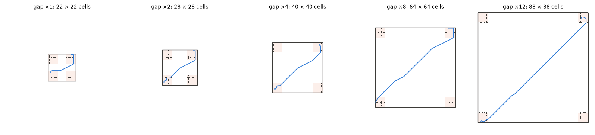
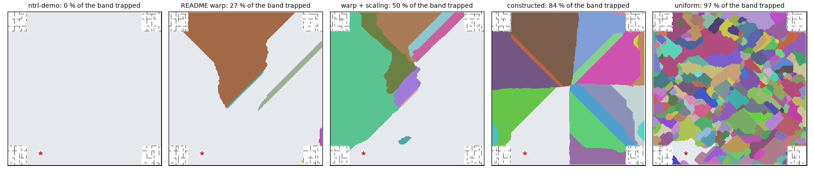
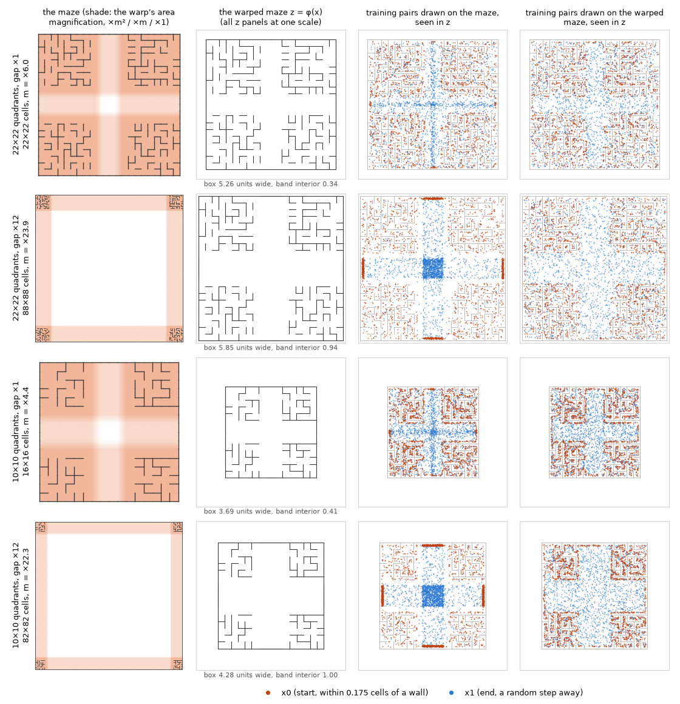
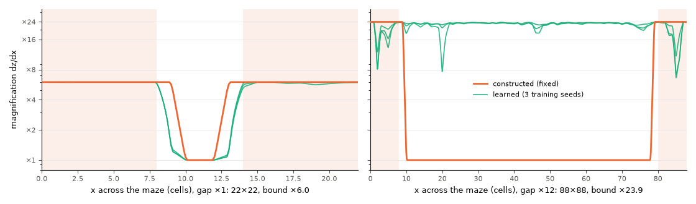
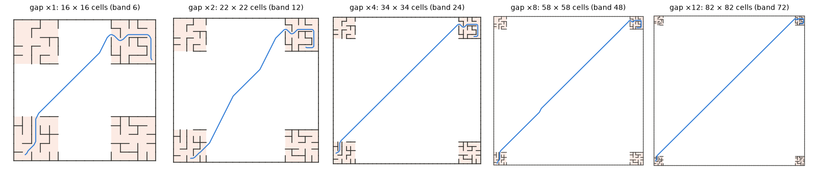

The 22×22 cross maze’s four 8×8 quadrant mazes were pushed apart until the open band between them was 2, 4, 8 and 12 times its 6 cells (mazes of 28 to 88 cells a side), and ntrl-demo was trained on each with the constructed warp, the learned warp, warp + scaling and the README warp, against ntrl-demo itself and a uniform stretch. The warps win while the band is narrow and lose once it is wide: at ×2 the constructed warp solves 41.8 % of all queries against ntrl-demo’s 32.3 %, at ×12 9.8 % against 24.2 %. Inside the quadrants the warps that magnify them stay ahead at every gap (same quadrant at ×12: constructed 19 % against 14 %); what they lose is the open band, which ntrl-demo crosses at 100 % and the constructed warp at 29 %. Their fields are right up close but place far open poses next to the goal, and the planner stalls in the spurious sinks this leaves. More training data does not fix it, and neither does planning in the warped space. A longer planner step gets out of the shallow sinks only (warp + scaling on two training seeds of three), costs the quadrants, and still leaves warp + scaling short of ntrl-demo. Supervising the straight-line distance where it is the travel time (no labels, no planner) repairs much of the band when the network can fit it: warp + scaling goes 35 → 82 % open–open at ×12 (training seed 87358 for both). The constructed warp fits it only with its heading left unmagnified, and then not on every training seed (open–open at ×8: 88 % on seed 87358, 48 % and 47 % on the other two): over three seeds it solves 19.9 % of all queries at ×8 against ntrl-demo’s 25.9 %. Trained the gap study’s way, none of the settings does better than ntrl-demo once the band is 8× wider; the best come level with it. Why does the constructed warp fall off although its warped mazes look almost the same? Trained on the warped maze instead (the network sees only the warped coordinates and its loss is taken there, so the fixed warp gets no gradient and the network is no longer asked for the robot’s real travel time), it beats ntrl-demo at every gap from ×2 on (MPPI on the warped maze, ×2 and ×4 on training seed 87358, ×8 and ×12 over three training seeds: ×8 36.8 against 25.9 %, ×12 29.2 against 24.2 %); the rest of its fall-off comes from the training pairs, which are drawn on the real maze, and from the band, which is still wider in the warped space. Drawing the training pairs on the warped maze too, so that they cover it as ntrl-demo’s cover the 22×22 maze, closes most of the rest: ×12 58.0 % over three training seeds, against 29.2 % with the pairs drawn on the maze, ntrl-demo’s 24.2 % and ×1’s 61.6 %; on training seed 87358 it stays between 57.7 and 60.1 % at every gap from ×1 to ×12. The same pairs leave ntrl-demo where it was (25.2 %) and the constructed warp trained on the maze below it (17.6 %). On the 10×10 maze’s quadrants with the same gaps, ntrl-demo falls from 68.4 % at ×1 to 26.7 % at ×12, this field from 92.3 to 85.1 % (over three training seeds). What remains at ×12 is the band’s width in the warp: shrunk to its ×1 width, the ×12 mazes plan like the ×1 mazes (63.4 and 92.2 %, training seed 87358), whichever warp the pairs were drawn on (63.0 and 92.2 %).
Every maze keeps the cross maze’s four 8×8 quadrant mazes unchanged and widens the open band between them: ×1 = 6 cells (22×22), ×2 = 12 cells (28×28), ×4 = 24 cells (40×40), ×8 = 48 cells (64×64), ×12 = 72 cells (88×88). ×1 is the 22×22 cross maze itself (its fields are the cross-warp study’s runs). Each maze has its own query set: 48 goals (6 in each quadrant, 24 in the open band) and 60 queries in each of five region pairs, same quadrant, adjacent quadrants, diagonal quadrants, quadrant – open and open – open, each certified by its true path (300 per maze). True travel distance, median: ×1: same 6, adjacent 17, diagonal 22, quadrant 14, open 8; ×2: same 7, adjacent 23, diagonal 32, quadrant 15, open 11; ×4: same 6, adjacent 35, diagonal 49, quadrant 27, open 20; ×8: same 5, adjacent 60, diagonal 83, quadrant 47, open 31; ×12: same 6, adjacent 84, diagonal 117, quadrant 68, open 46 cells (same, adjacent, diagonal, quadrant–open, open–open). The planner on the true travel time solves all 300 queries of every maze (planning seed 0), so every failure below is the learned field’s.

All methods are ntrl-demo (its network, data recipe, 5,000 epochs, MPPI planner scaled per cell); only the map in front of its Fourier encoder changes. Magnifications scale with the maze side E = n + 0.1 so that a quadrant cell looks the same to the encoder at every gap as in the 22×22 study, where these settings were best:
| gap | maze (cells) | band (cells) | uniform stretch | constructed: quadrants / band | learned (bounds) | warp + scaling |
|---|---|---|---|---|---|---|
| ×1 | 22 × 22 | 6 | ×4.0 | ×6.0 / ×1 | ×1 … ×6.0 | ×4, heading ×6.0 |
| ×2 | 28 × 28 | 12 | ×5.1 | ×7.6 / ×1 | ×1 … ×7.6 | ×4, heading ×7.6 |
| ×4 | 40 × 40 | 24 | ×7.3 | ×10.9 / ×1 | ×1 … ×10.9 | ×4, heading ×10.9 |
| ×8 | 64 × 64 | 48 | ×11.6 | ×17.4 / ×1 | ×1 … ×17.4 | ×4, heading ×17.4 |
| ×12 | 88 × 88 | 72 | ×15.9 | ×23.9 / ×1 | ×1 … ×23.9 | ×4, heading ×23.9 |
Inside the quadrants the warps that magnify them still help. Same-quadrant queries at ×12: ntrl-demo 14 %, constructed 19 %, learned 16 %, warp + scaling 16 %, uniform 17 %, README warp 13 %. Every method falls with the gap here, ntrl-demo from 33 % at ×1, the constructed warp from 64 %, although the quadrant mazes and their per-cell magnification are the same in every maze (below: fewer training pairs land inside one quadrant).
Crossing between quadrants collapses for everyone. Adjacent and diagonal pairs need both quadrant mazes and the band; at ×12 every method solves 2 % or less of the adjacent and 2 % or less of the diagonal pairs, almost all ending in a wall.
The open band is where the warps lose. ntrl-demo solves 96–100 % of open–open queries at every gap. Every method that magnifies the band loses them from ×4 on: uniform 98 → 89 → 54 → 11 → 0 %, constructed 97 → 91 → 49 → 22 → 29 %, learned 97 → 69 → 56 → 1 → 0 %, warp + scaling 96 → 86 → 72 → 42 → 24 % (×1 → ×12). The README warp, which shrinks the band instead, keeps it (97 → 98 → 96 → 95 → 95 %). Overall at ×12: ntrl-demo 24.2 %, constructed 9.8 %, learned 3.1 %, warp + scaling 8.9 %, uniform 3.4 %, README warp 22.5 %.
MPPI success against the gap between the quadrants, pooled over training seeds and planning seeds 0/1/2; the whisker is the range over training seeds. Each panel is one region pair (60 certified queries per maze); hover for the numbers.
| method | seeds | all % | same quadrant | adjacent quadrants | diagonal quadrants | quadrant - open | open - open |
|---|---|---|---|---|---|---|---|
| ntrl-demo | 3 | 43.8 | 33 | 25 | 23 | 43 | 96 |
| uniform | 3 | 61.9 | 55 | 50 | 51 | 56 | 98 |
| constructed | 3 | 64.5 | 64 | 50 | 48 | 64 | 97 |
| learned | 3 | 60.0 | 62 | 43 | 40 | 58 | 97 |
| warp + scaling | 3 | 58.5 | 55 | 42 | 43 | 57 | 96 |
| README warp | 3 | 46.3 | 29 | 21 | 37 | 49 | 97 |
| method | seeds | all % | same quadrant | adjacent quadrants | diagonal quadrants | quadrant - open | open - open |
|---|---|---|---|---|---|---|---|
| ntrl-demo | 3 | 32.3 | 22 | 10 | 8 | 25 | 97 |
| uniform | 3 | 41.3 | 41 | 18 | 19 | 40 | 89 |
| constructed | 3 | 41.8 | 42 | 21 | 16 | 39 | 91 |
| learned | 3 | 35.7 | 47 | 25 | 7 | 30 | 69 |
| warp + scaling | 3 | 36.6 | 34 | 15 | 18 | 30 | 86 |
| README warp | 3 | 37.7 | 26 | 11 | 19 | 34 | 98 |
| method | seeds | all % | same quadrant | adjacent quadrants | diagonal quadrants | quadrant - open | open - open |
|---|---|---|---|---|---|---|---|
| ntrl-demo | 3 | 26.8 | 15 | 9 | 0 | 12 | 98 |
| uniform | 3 | 22.9 | 29 | 9 | 3 | 20 | 54 |
| constructed | 3 | 21.1 | 36 | 1 | 0 | 19 | 49 |
| learned | 3 | 19.2 | 23 | 6 | 1 | 11 | 56 |
| warp + scaling | 3 | 26.5 | 23 | 8 | 7 | 23 | 72 |
| README warp | 3 | 27.6 | 19 | 6 | 6 | 11 | 96 |
| method | seeds | all % | same quadrant | adjacent quadrants | diagonal quadrants | quadrant - open | open - open |
|---|---|---|---|---|---|---|---|
| ntrl-demo | 3 | 25.9 | 12 | 3 | 2 | 13 | 100 |
| uniform | 3 | 7.1 | 24 | 0 | 0 | 1 | 11 |
| constructed | 3 | 10.2 | 26 | 1 | 0 | 3 | 22 |
| learned | 3 | 3.4 | 16 | 0 | 0 | 0 | 1 |
| warp + scaling | 3 | 15.6 | 25 | 2 | 2 | 7 | 42 |
| README warp | 3 | 24.3 | 14 | 1 | 1 | 10 | 95 |
| method | seeds | all % | same quadrant | adjacent quadrants | diagonal quadrants | quadrant - open | open - open |
|---|---|---|---|---|---|---|---|
| ntrl-demo | 3 | 24.2 | 14 | 0 | 0 | 7 | 100 |
| uniform | 3 | 3.4 | 17 | 0 | 0 | 0 | 0 |
| constructed | 3 | 9.8 | 19 | 0 | 0 | 1 | 29 |
| learned | 3 | 3.1 | 16 | 0 | 0 | 0 | 0 |
| warp + scaling | 3 | 8.9 | 16 | 0 | 1 | 3 | 24 |
| README warp | 3 | 22.5 | 13 | 1 | 1 | 2 | 95 |
Two ways to fail. A run fails by touching a wall on its way to the goal, or by never arriving within its step budget (a stall: MPPI sits in a dip of the field). ntrl-demo fails by touching walls: at ×12, 2,047 of its 2,047 failed runs with a quadrant end arrive after touching a wall (its field leaks through walls). The warps that magnify the band fail by stalling, at queries with a quadrant end as at open–open ones: 2,043 of the constructed warp’s 2,052 never arrive. (Counted by arrival. The planner appends the goal to every path, so this table used to count a run that never arrived as a wall contact whenever the jump from where it stopped to the goal crossed a wall, and read the warps’ stalls in the quadrants as collisions.)
| gap | method | seeds | queries with a quadrant end: solved / wall / stalled % | open – open: solved / wall / stalled % |
|---|---|---|---|---|
| ×8 | ntrl-demo | 3 | 7 / 92 / 1 | 100 / 0 / 0 |
| ×8 | uniform | 3 | 6 / 9 / 85 | 11 / 0 / 89 |
| ×8 | constructed | 3 | 7 / 1 / 91 | 22 / 0 / 78 |
| ×8 | learned | 3 | 4 / 15 / 81 | 1 / 0 / 99 |
| ×8 | warp + scaling | 3 | 9 / 20 / 71 | 42 / 0 / 58 |
| ×8 | README warp | 3 | 7 / 44 / 50 | 95 / 0 / 5 |
| ×12 | ntrl-demo | 3 | 5 / 95 / 0 | 100 / 0 / 0 |
| ×12 | uniform | 3 | 4 / 12 / 84 | 0 / 0 / 100 |
| ×12 | constructed | 3 | 5 / 0 / 95 | 29 / 0 / 71 |
| ×12 | learned | 3 | 4 / 12 / 84 | 0 / 0 / 100 |
| ×12 | warp + scaling | 3 | 5 / 17 / 78 | 24 / 0 / 76 |
| ×12 | README warp | 3 | 4 / 65 / 30 | 95 / 0 / 5 |
The stalls are spurious sinks. The true travel time to a goal in the open band has no minimum but the goal. For each open–open goal, follow steepest descent on the learned field from every open-band cell (x, y on a 0.25-cell grid, best of 12 headings) and ask where it ends. ntrl-demo drains the whole band to the goal at every gap; the magnifying warps split it into basins of spurious sinks, and the share of the band they trap tracks the open–open failures:

| method | ×2 | ×4 | ×8 | ×12 |
|---|---|---|---|---|
| ntrl-demo | 1 / 98 | 2 / 97 | 0 / 100 | 0 / 100 |
| uniform | 1 / 98 | 51 / 50 | 96 / 0 | 99 / 0 |
| constructed | 3 / 100 | 41 / 59 | 71 / 23 | 69 / 30 |
| learned | 41 / 65 | 53 / 48 | 97 / 0 | 100 / 0 |
| warp + scaling | 3 / 92 | 12 / 90 | 55 / 51 | 79 / 35 |
| README warp | 1 / 95 | 4 / 96 | 11 / 98 | 37 / 97 |
Each cell: share of the open band draining to a spurious sink / open–open queries solved (training seed 87358, planning seeds 0/1/2).
What the sinks are. The failing fields are right up close and wrong at range. At open poses their slope is as good as ntrl-demo’s (eikonal error at ×8: constructed 0.11, warp + scaling 0.09, ntrl-demo 0.06), but they put far poses too close to the goal. Where the straight segment to the goal is free, the true travel time is the straight-line distance, and the learned T is 0.47 of it across the band for the constructed warp and 0.77 for warp + scaling (0.20 and 0.70 at their sinks), against 1.08 for ntrl-demo. On open pairs 24 cells or more apart, the constructed warp’s descent points away from the partner 41 % of the time (ntrl-demo 0.0 %). ntrl-demo’s network computes T as a distance between the two poses’ codes, T(a, b) = d(f(a), f(b)); magnify the band and f varies so fast across it that far-apart poses can land close together in code space. A sink is such a pose: its code sits next to the goal’s. Training on the PDE fixes the slope of T near each sample and nothing pushes those codes apart.
Controls (64×64 maze, same queries, training seed 87358; ntrl-demo gets every change too). Each tests one explanation:
--lb-weight) lifts the constructed warp’s T across the band (0.47 → 0.92 of the distance) and open–open 23 → 50 %; ntrl-demo 26.3 → 26.3 % overall.--los-weight) leaves the constructed warp at 32 % open–open because it cannot fit it: mean squared error 0.0852 at the end of training (about 19 cells) against 0.0009 for ntrl-demo (2 cells; every seed fits it to about 2 cells). With the heading left at ×1 the same warp fits it on one training seed of three: seed 87358 2.4 cells and 88 % open–open, seed 1 12.4 cells and 48 % open–open, seed 2 12.2 cells and 47 % open–open. The separable warp stretches each arm of the band ×m along one axis; with the heading magnified ×m as well, the codes there change fast along two axes along which the travel time changes slowly or not at all, and the network does not manage to make them reproduce a straight-line distance; with the heading at ×1 it sometimes does. Warp + scaling, whose warp magnifies the band about evenly, fits it to 0.0032 and goes 51 → 82 % open–open (19.1 → 25.9 % overall; ×12: 35 → 82 %).| field | change | all % (seed 87358) | same quadrant | quadrant – open | open – open | band trapped % | T/|a−b| band | T/|a−b| sinks |
|---|---|---|---|---|---|---|---|---|
| ntrl-demo, ×8 | none | 26.3 (25.9 over 3 seeds) | 12 | 13 | 100 | 0 | 1.08 | – |
| ntrl-demo, ×8 | + 250k open pairs | 24.9 | 10 | 12 | 99 | 0 | 1.03 | – |
| ntrl-demo, ×8 | + 500k local pairs | 26.3 | 12 | 15 | 100 | 0 | 1.06 | – |
| ntrl-demo, ×8 | heading ×m | 26.2 | 13 | 13 | 100 | 0 | 1.08 | 1.04 |
| ntrl-demo, ×8 | T ≥ |a−b| | 26.3 | 15 | 13 | 100 | 0 | 1.08 | 1.00 |
| ntrl-demo, ×8 | line of sight | 26.3 (25.5 over 3 seeds) | 14 | 12 | 100 | 0 | 1.08 | – |
| ntrl-demo, ×8 | TD step 0.66 cells | 27.0 | 15 | 13 | 100 | 0 | 1.08 | – |
| ntrl-demo, ×8 | line of sight, TD step 0.66 cells | 26.4 | 14 | 13 | 100 | 0 | 1.07 | 1.07 |
| constructed, ×8 | none | 11.3 (10.2 over 3 seeds) | 28 | 5 | 23 | 71 | 0.47 | 0.20 |
| constructed, ×8 | + 250k open pairs | 11.7 | 27 | 0 | 32 | 66 | 0.44 | 0.06 |
| constructed, ×8 | + 500k local pairs | 10.3 | 27 | 3 | 22 | 71 | 0.43 | 0.12 |
| constructed, ×8 | + open + local pairs | 9.7 | 17 | 2 | 30 | 72 | 0.36 | 0.06 |
| constructed, ×8 | heading ×1 | 17.8 | 32 | 12 | 45 | 54 | 0.74 | 0.48 |
| constructed, ×8 | T ≥ |a−b| | 16.6 | 31 | 2 | 50 | 55 | 0.92 | 0.56 |
| constructed, ×8 | line of sight | 10.6 | 21 | 0 | 32 | 62 | 0.76 | 0.45 |
| constructed, ×8 | heading ×1, line of sight | 28.3 (19.9 over 3 seeds) | 32 | 20 | 88 | 9 | 1.05 | 1.00 |
| constructed, ×8 | TD step 0.66 cells | 15.1 | 39 | 7 | 30 | 67 | 0.51 | 0.24 |
| constructed, ×8 | heading ×1, line of sight, TD step 0.66 cells | 26.7 | 33 | 13 | 87 | 10 | 1.05 | 0.98 |
| warp + scaling, ×8 | none | 19.1 (15.6 over 3 seeds) | 22 | 12 | 51 | 55 | 0.77 | 0.70 |
| warp + scaling, ×8 | + 250k open pairs | 16.7 | 20 | 4 | 58 | 43 | 0.74 | 0.65 |
| warp + scaling, ×8 | line of sight | 25.9 | 26 | 13 | 82 | 24 | 0.91 | 0.87 |
| warp + scaling, ×8 | line of sight, TD step 0.66 cells | 13.7 | 34 | 8 | 24 | 73 | 0.70 | 0.59 |
| learned, ×8 | none (starts at the top bound) | 3.6 (3.4 over 3 seeds) | 18 | 0 | 0 | 97 | 25.46 | 21.31 |
| learned, ×8 | starts as the constructed warp | 12.6 | 33 | 5 | 25 | 67 | 0.45 | 0.18 |
| learned, ×8 | constructed start, + open pairs | 7.7 | 25 | 0 | 13 | 81 | 0.37 | 0.08 |
| uniform, ×8 | none | 4.9 (7.1 over 3 seeds) | 24 | 0 | 0 | 96 | 24.03 | 20.99 |
| README warp, ×8 | none | 27.0 (24.3 over 3 seeds) | 18 | 15 | 98 | 11 | 0.95 | 0.90 |
| ntrl-demo, ×12 | none | 24.2 (24.2 over 3 seeds) | 13 | 8 | 100 | 0 | 1.09 | 1.08 |
| ntrl-demo, ×12 | + 250k open pairs | 26.1 | 16 | 13 | 100 | 0 | 1.03 | – |
| ntrl-demo, ×12 | line of sight | 25.0 | 13 | 10 | 100 | 0 | 1.05 | – |
| ntrl-demo, ×12 | line of sight, TD step 0.66 cells | 24.2 | 13 | 8 | 100 | 0 | 1.06 | – |
| constructed, ×12 | none | 10.0 (9.8 over 3 seeds) | 18 | 2 | 30 | 69 | 0.37 | 0.15 |
| constructed, ×12 | + 250k open pairs | 8.8 | 18 | 0 | 26 | 76 | 0.36 | 0.06 |
| constructed, ×12 | heading ×1, line of sight | 23.7 | 17 | 8 | 92 | 8 | 1.10 | 1.01 |
| constructed, ×12 | heading ×1, line of sight, TD step 0.66 cells | 19.4 | 26 | 3 | 68 | 26 | 1.09 | 0.90 |
| warp + scaling, ×12 | none | 11.7 (8.9 over 3 seeds) | 15 | 6 | 35 | 79 | 0.58 | 0.41 |
| warp + scaling, ×12 | + 250k open pairs | 13.7 | 13 | 7 | 48 | 55 | 0.72 | 0.63 |
| warp + scaling, ×12 | line of sight | 19.7 | 17 | 0 | 82 | 43 | 0.87 | 0.80 |
| warp + scaling, ×12 | line of sight, TD step 0.66 cells | 9.3 | 18 | 0 | 28 | 86 | 0.53 | 0.39 |
| learned, ×12 | none (starts at the top bound) | 3.1 (3.1 over 3 seeds) | 16 | 0 | 0 | 100 | 15.52 | 11.66 |
| uniform, ×12 | none | 3.4 (3.4 over 3 seeds) | 17 | 0 | 0 | 99 | 15.32 | 12.17 |
| README warp, ×12 | none | 22.7 (22.5 over 3 seeds) | 13 | 1 | 97 | 37 | 0.73 | 0.71 |
Columns: success over planning seeds 0/1/2; band trapped = share of the open band draining to a spurious sink (mean over the open–open goals); T / |a−b| = learned travel time over the straight-line distance for free straight segments to those goals (1 = right), median over random band cells and over the sinks.
Uniform stretch and the learned warp do not train from ×8 on. Their loss stays near 7e-02 from epoch 500 (ntrl-demo 2e-03), and their fields are slow everywhere: T is 24.03 times the straight-line distance in the band. ntrl-demo’s loss weights each pair by exp(−T/2), so pairs whose T has grown large stop counting and the field never recovers. The learned warp starts at its top bound, which is the uniform stretch; started as the constructed warp instead it trains (12.6 % overall, open–open 25 %).
MPPI normally draws its samples with the same step everywhere in the maze (a fixed share of a cell). Planned in the stretched space instead (warpplan.mppi_stretched), each sample is drawn in the encoder’s input coordinates and mapped back through the warp’s local Jacobian: the step inside a quadrant stays what it was, and where the warp magnifies less (the open band, for every warp here) steps and the 5-step look-ahead grow by the same factor, up to ×17 at ×8. If the planner stalled because its 0.3-cell look-ahead could not see past a shallow dip, this would let it through. With a constant stretch (ntrl-demo, uniform) it is the same planner, which checks the implementation: those rows come out identical. Paired by query and planning seed (0); training seed 87358; the same fields as above.
It does not help. The stalls stay (the spurious basins are wider than even the stretched look-ahead), the wall contacts stay, and queries between a quadrant and the band lose a little (longer steps near the quadrant entrances). The planner gets there in far fewer steps, but the field’s defects decide the outcome, not the planner’s step. The one gain is warp + scaling at ×12, whose spurious sinks are the shallowest: open–open 35 → 47 %, still far below ntrl-demo’s.
| field, gap | quadrant stretch | all % | same quadrant | quadrant – open | open – open | walls / stalls | median steps |
|---|---|---|---|---|---|---|---|
| ntrl-demo, ×8 | ×1.0 | 26.0 → 26.0 | 12 → 12 | 13 → 13 | 100 → 100 | 217 / 5 → 217 / 5 | 915 → 915 |
| uniform, ×8 | ×11.6 | 5.0 → 5.0 | 25 → 25 | 0 → 0 | 0 → 0 | 31 / 254 → 31 / 254 | 2583 → 2584 |
| constructed, ×8 | ×17.4 | 11.3 → 11.3 | 28 → 28 | 5 → 2 | 23 → 27 | 6 / 260 → 6 / 260 | 2583 → 629 |
| learned, ×8 | ×12.4 | 4.0 → 3.3 | 20 → 17 | 0 → 0 | 0 → 0 | 35 / 253 → 35 / 255 | 2583 → 2627 |
| README warp, ×8 | ×2.1 | 27.0 → 26.3 | 18 → 18 | 15 → 8 | 98 → 100 | 103 / 116 → 106 / 115 | 1064 → 426 |
| warp + scaling, ×8 | ×8.5 | 18.7 → 16.7 | 22 → 22 | 12 → 10 | 50 → 47 | 75 / 169 → 82 / 168 | 1590 → 661 |
| constructed, heading ×1 + line of sight, ×8 | ×17.4 | 28.7 → 26.3 | 32 → 30 | 20 → 12 | 90 → 88 | 11 / 203 → 15 / 206 | 1955 → 599 |
| ntrl-demo, ×12 | ×1.0 | 24.3 → 24.3 | 13 → 13 | 8 → 8 | 100 → 100 | 227 / 0 → 227 / 0 | 1227 → 1227 |
| uniform, ×12 | ×15.9 | 3.7 → 3.7 | 18 → 18 | 0 → 0 | 0 → 0 | 27 / 262 → 27 / 262 | 3443 → 3444 |
| constructed, ×12 | ×23.9 | 10.0 → 9.7 | 18 → 18 | 2 → 2 | 30 → 28 | 1 / 269 → 2 / 269 | 3443 → 679 |
| learned, ×12 | ×19.2 | 3.0 → 3.3 | 15 → 17 | 0 → 0 | 0 → 0 | 30 / 261 → 33 / 257 | 3443 → 4078 |
| README warp, ×12 | ×2.4 | 22.7 → 22.0 | 13 → 15 | 0 → 0 | 97 → 95 | 165 / 67 → 172 / 62 | 1480 → 492 |
| warp + scaling, ×12 | ×9.5 | 11.7 → 13.3 | 15 → 17 | 5 → 3 | 35 → 47 | 68 / 197 → 72 / 188 | 3061 → 1391 |
| constructed, heading ×1 + line of sight, ×12 | ×23.9 | 24.0 → 23.0 | 17 → 17 | 10 → 12 | 92 → 87 | 17 / 211 → 21 / 210 | 3159 → 630 |
MPPI’s step is the same share of a cell on every maze: 0.06 cells, so its 5-step look-ahead sees 0.31 cells. Here it runs from half that to 16 times that (0.03 to 0.98 cells; corridors are one cell wide) on the same fields, queries and planning seed. The temperature is divided by the same factor (plan.settings’ rule when the cell size changes, so the softmax is as selective per step), and the budget lets every step size travel three times the true path. Without the cap a long step circles the goal and never lands within the planner’s 0.04-cell tolerance: ntrl-demo at ×12 solves 24.3 % at the default step and 3.7 % at 16× uncapped (231 of 300 runs end within two steps of the goal without arriving), 23.3 % with the cap. At the default step the cap moves no field by more than 1.0 points (it only acts within one step of the goal).
In the wide band the step matters only where the sinks are shallow. At ×8 and ×12, ntrl-demo, the control, has no sinks and stays within 1.3 points of all queries across the six steps; the README warp, which solves its band at every step, within 2.0. The constructed warp keeps its stalls run for run: at ×8, 220 of its 260 stalled runs stall again at 16× and stop within 0.8 cells of where they stopped before (median, 58 cells from the goal); at ×12, 226 of 269, within 0.5 cells (82 cells from the goal). The learned warp and the uniform stretch, which do not train at ×8 and ×12, stay where they were. Warp + scaling is the exception: at 16× the step its open–open success rises 50 → 87 % and 35 → 63 % at ×8 and ×12 (23 of 169 and 19 of 198 stalled runs now arrive), and all queries 18.7 → 22.0 % and 11.3 → 17.0 %, still below ntrl-demo’s 26.0 and 24.3 %.
The difference is how deep the sinks are (diagnostics above, training seed 87358). At warp + scaling’s sinks the field reads 0.70 and 0.41 of the straight-line distance to the goal (×8 and ×12): a shallow dip, and a look-ahead of a few cells reaches ground that is lower on the way to the goal. At the constructed warp’s sinks it reads 0.20 and 0.15: the field says the goal is right there, every way out climbs, and no step size gets out. Long steps cost the quadrants instead: at half a cell or more per step the runs cut corners into walls. Where the quadrant mazes are most of the maze that is all they do: at ×1 every field loses 18 to 42 points of all queries at 16× the step (constructed 66.0 → 24.3 %, same quadrant 58 → 15 %), and the default step is as good as any. Halving the step moves no field by more than 3.0 points.
The depth decides it, seed by seed. Over both warps, three training seeds and ×8 and ×12, every field whose sinks read 0.36 of the straight-line distance or more gains 28 to 37 points of open–open at 16× the step; every field at 0.32 or less gains at most 8 (table below). Warp + scaling’s training seed 1 is one of the deep ones, so for it the step does nothing; the gain is a property of the trained field, not of the warp.
| field, gap | 0.03 | 0.06 (default) | 0.12 | 0.25 | 0.49 | 0.98 cells |
|---|---|---|---|---|---|---|
| ntrl-demo, ×1 | 41.3 33 / 93 | 41.0 33 / 93 | 39.0 37 / 93 | 33.7 27 / 93 | 31.7 23 / 92 | 22.7 13 / 82 |
| uniform, ×1 | 62.3 62 / 97 | 63.7 57 / 97 | 58.3 45 / 95 | 49.3 33 / 93 | 37.3 28 / 93 | 25.3 15 / 85 |
| constructed, ×1 | 66.3 58 / 95 | 66.0 58 / 95 | 65.3 57 / 95 | 60.7 62 / 95 | 39.0 32 / 93 | 24.3 15 / 82 |
| learned, ×1 | 66.0 65 / 93 | 63.7 62 / 93 | 60.7 53 / 95 | 50.3 47 / 92 | 36.0 28 / 88 | 24.3 15 / 85 |
| README warp, ×1 | 50.0 32 / 97 | 49.0 33 / 93 | 46.7 28 / 92 | 40.0 23 / 92 | 33.7 15 / 90 | 24.0 8 / 85 |
| warp + scaling, ×1 | 55.7 48 / 95 | 58.7 55 / 95 | 59.7 52 / 95 | 53.7 40 / 95 | 41.7 28 / 92 | 24.7 20 / 82 |
| ntrl-demo, ×2 | 33.0 23 / 97 | 34.7 27 / 98 | 35.3 25 / 100 | 32.7 27 / 98 | 32.7 28 / 98 | 25.7 15 / 95 |
| uniform, ×2 | 47.0 47 / 98 | 48.7 47 / 98 | 47.0 32 / 100 | 40.7 27 / 98 | 35.0 22 / 98 | 26.0 17 / 95 |
| constructed, ×2 | 49.3 47 / 100 | 51.0 50 / 100 | 51.0 47 / 100 | 46.7 38 / 100 | 35.0 20 / 97 | 26.3 17 / 92 |
| learned, ×2 | 34.0 52 / 65 | 35.0 52 / 65 | 33.0 47 / 65 | 29.3 33 / 70 | 25.0 30 / 70 | 19.0 15 / 68 |
| README warp, ×2 | 31.7 23 / 95 | 31.3 23 / 95 | 31.3 22 / 95 | 31.3 22 / 97 | 32.7 22 / 98 | 24.0 8 / 97 |
| warp + scaling, ×2 | 35.0 37 / 92 | 37.0 37 / 92 | 42.3 38 / 97 | 38.0 28 / 97 | 33.7 27 / 98 | 26.0 18 / 92 |
| ntrl-demo, ×4 | 25.7 12 / 97 | 25.7 12 / 97 | 26.0 12 / 98 | 26.3 12 / 98 | 26.7 12 / 97 | 25.3 10 / 97 |
| uniform, ×4 | 19.0 23 / 50 | 19.0 23 / 50 | 20.0 25 / 52 | 18.3 18 / 52 | 18.7 18 / 55 | 16.7 13 / 60 |
| constructed, ×4 | 24.7 37 / 58 | 25.0 37 / 60 | 23.7 33 / 60 | 23.0 28 / 60 | 18.3 18 / 62 | 18.0 17 / 63 |
| learned, ×4 | 18.7 25 / 48 | 18.0 23 / 48 | 19.0 25 / 48 | 19.7 28 / 48 | 17.3 23 / 47 | 15.7 13 / 53 |
| README warp, ×4 | 27.7 17 / 97 | 27.0 17 / 97 | 27.3 17 / 95 | 27.0 15 / 97 | 27.0 15 / 97 | 26.7 13 / 97 |
| warp + scaling, ×4 | 32.0 25 / 90 | 31.3 22 / 90 | 32.7 25 / 90 | 33.0 18 / 90 | 30.3 17 / 90 | 25.3 15 / 90 |
| ntrl-demo, ×8 | 26.3 12 / 100 | 26.0 12 / 100 | 26.0 12 / 100 | 26.0 12 / 100 | 26.3 13 / 100 | 25.3 15 / 100 |
| uniform, ×8 | 4.7 23 / 0 | 5.0 25 / 0 | 4.0 20 / 0 | 3.3 17 / 0 | 3.3 15 / 2 | 4.3 13 / 8 |
| constructed, ×8 | 11.3 28 / 23 | 11.3 28 / 23 | 12.0 32 / 23 | 13.3 40 / 25 | 12.7 35 / 23 | 9.0 17 / 27 |
| learned, ×8 | 4.0 20 / 0 | 4.0 20 / 0 | 3.0 15 / 0 | 4.0 18 / 2 | 3.0 13 / 2 | 2.7 12 / 2 |
| README warp, ×8 | 26.3 18 / 98 | 27.0 18 / 98 | 27.0 18 / 100 | 27.7 18 / 100 | 26.0 15 / 100 | 25.7 15 / 100 |
| warp + scaling, ×8 | 19.3 23 / 47 | 18.7 22 / 50 | 17.7 18 / 50 | 19.0 20 / 62 | 21.0 18 / 72 | 22.0 17 / 87 |
| constructed, heading ×1 + line of sight, ×8 | 28.3 32 / 88 | 28.7 32 / 90 | 28.7 28 / 90 | 29.0 27 / 90 | 27.3 25 / 88 | 25.3 18 / 93 |
| ntrl-demo, ×12 | 24.7 15 / 100 | 24.3 13 / 100 | 24.3 13 / 100 | 24.0 13 / 100 | 23.7 13 / 100 | 23.3 13 / 100 |
| uniform, ×12 | 3.3 17 / 0 | 3.7 18 / 0 | 3.3 17 / 0 | 3.3 17 / 0 | 3.0 15 / 0 | 2.0 10 / 0 |
| constructed, ×12 | 9.7 17 / 30 | 10.0 18 / 30 | 10.7 20 / 30 | 10.0 18 / 30 | 11.0 23 / 30 | 10.0 18 / 30 |
| learned, ×12 | 3.0 15 / 0 | 3.0 15 / 0 | 3.0 15 / 0 | 2.7 13 / 0 | 2.7 13 / 0 | 3.0 15 / 0 |
| README warp, ×12 | 23.0 13 / 97 | 23.0 13 / 97 | 23.0 13 / 97 | 23.7 15 / 98 | 23.3 13 / 98 | 23.0 13 / 97 |
| warp + scaling, ×12 | 11.7 15 / 35 | 11.3 15 / 35 | 13.7 17 / 43 | 14.3 17 / 53 | 16.7 15 / 57 | 17.0 15 / 63 |
| constructed, heading ×1 + line of sight, ×12 | 23.7 17 / 92 | 23.7 17 / 92 | 24.0 20 / 92 | 24.7 20 / 92 | 22.0 13 / 92 | 22.3 13 / 92 |
MPPI step in cells (the 5-step look-ahead is five of them). Each cell: all queries, % solved (bold), then same quadrant / open–open %. Training seed 87358, planning seed 0, the same 300 queries per gap as above; steps longer than the default are capped at the distance to the goal. Runs: ×1 20261104T194930Z-14f199e8, ×2 20261104T192819Z-0adee541, ×4 20261104T190342Z-28fa7e40, ×8 20261104T190232Z-e662041b, ×12 20261104T190252Z-2edef78f.
| field, gap, training seed | T / distance at sinks | band in sink basins | sinks / goal | open–open, 1× → 16× |
|---|---|---|---|---|
| constructed, ×12, seed 2 | 0.06 | 54 % | 16 | 38 → 42 |
| constructed, ×8, seed 1 | 0.08 | 78 % | 12 | 10 → 12 |
| constructed, ×12, seed 1 | 0.12 | 75 % | 19 | 18 → 23 |
| constructed, ×12, seed 87358 | 0.15 | 69 % | 16 | 30 → 30 |
| warp + scaling, ×12, seed 1 | 0.16 | 94 % | 510 | 2 → 3 |
| constructed, ×8, seed 87358 | 0.20 | 71 % | 10 | 23 → 27 |
| constructed, ×8, seed 2 | 0.30 | 59 % | 12 | 32 → 40 |
| warp + scaling, ×8, seed 1 | 0.32 | 85 % | 123 | 15 → 20 |
| warp + scaling, ×12, seed 2 | 0.36 | 80 % | 98 | 35 → 68 |
| warp + scaling, ×12, seed 87358 | 0.41 | 79 % | 68 | 35 → 63 |
| warp + scaling, ×8, seed 87358 | 0.70 | 55 % | 15 | 50 → 87 |
| warp + scaling, ×8, seed 2 | 0.74 | 59 % | 16 | 60 → 88 |
Sorted by the second column: the field’s travel time T from a sink to the goal over their straight-line distance (median over the open band’s sinks; 1 = no aliasing, small = the field puts the sink next to the goal). Diagnostics openfit.py (seeds 1 and 2: openfit.py 8 12 --seeds); planning seed 0.
Request (2026-11-04, evening): “Go into the gap warp spaces one. In your hand constructed version, why does it fall off to begin with? so 1) the hand crafted warp should not change from x1 gap to x12 gap right. 2) The model doesn’t know it is warped at all, it thinks x1 and x12 are the same so at least mppi on that warped space should be the same. With the fixed, make sure no gradient goes into the warp. Finally, show me learned time travel field on the warped and also on the original.” The fields, on the maze and on the warped maze at every gap, are in the warp-space viewer; its text is the answer below.
1. Is the constructed warp the same at every gap? Yes. It is one design, scaled so that a quadrant cell looks the same to the encoder at every gap, and training never changes it: its grids are created without gradients, they are not in the optimizer, and every checkpoint holds the design bit for bit (×1 to ×12; epoch 1,000 equals epoch 5,000). In the encoder’s input a quadrant is 2.17 units wide at every gap, and the band grows only from 0.89 to 1.48 units while it grows from 6 to 72 cells (the whole maze: 5.23 → 5.82 units). The warped mazes are almost the same picture.
2. Did the model know it was warped? In the gap study, yes: through its loss. The gap study took ntrl-demo’s loss on the maze: its eikonal, TD and normal terms are derivatives with respect to the pose x, so the chain rule runs through φ on every step, although φ itself never changes. The network had to output the robot’s real travel time, and in the warped coordinates that target changes with the gap while the input does not. Crossing a quadrant takes 0.36 time units at ×1 and 0.09 at ×12 over the same 2.17 input units; crossing the band takes 0.27 over 0.89 units at ×1 and 0.82 over 1.48 at ×12. At ×12 the quadrants are almost flat and the band is steep (the field “trained on the maze” at every gap, below). That is the function the gap study’s network failed to fit: all queries 64.5 % at ×1, 9.8 % at ×12 (three training seeds; ntrl-demo 43.8 → 24.2 %).
3. The test: train and plan on the warped maze. Here the network never sees x. Every training pose is mapped once to z = φ(x) under no_grad, so no gradient reaches the warp or passes through its Jacobian; the clearance normals are carried into z; and ntrl-demo’s loss is taken in z exactly as it is taken in x without a warp. MPPI then runs on z with the same code and the same step per quadrant cell, and each path is mapped back to the maze exactly and scored there. All queries solved, training seed 87358: ×1 61.0 %, ×2 57.0 %, ×4 46.6 %, ×8 37.1 %, ×12 30.2 % (the gap study’s constructed warp, same seed, planned on the maze: ×1 66.4 %, ×2 50.7 %, ×4 25.1 %, ×8 11.3 %, ×12 10.0 %). Over three training seeds (87358, 1, 2), MPPI on the warped maze: ×1 61.6 % against ntrl-demo 43.8 % and the gap study’s constructed warp 64.5 %; ×8 36.8 % against ntrl-demo 25.9 % and the gap study’s constructed warp 10.2 %; ×12 29.2 % against ntrl-demo 24.2 % and the gap study’s constructed warp 9.8 % (both pooled over the same three seeds, planned on the maze).
4. What is still different: the training pairs. Training on the warped maze makes the input and the loss the same at every gap, but not the data. ntrl-demo’s recipe draws its pairs on the maze in units of the maze’s side: x0 within the wall margin of any wall, x1 a random distance away. As the band widens, its outer border takes a growing share of the walls and the pairs get longer: 83 % of the starts lie in a quadrant at ×1 and 53 % at ×12, and 34 % of the pairs have both ends in one quadrant at ×1 against 7 % at ×12. The quadrants are identical in the warped space, but at ×12 they get about a fifth of the pairs.
5. The same pairs. Every 22 × 22 training pair moved into the ×12 maze, with the quadrants and the band’s edge cells unchanged and only the band’s interior stretched, is exactly the 22 × 22 pair inside the quadrants in the warped space (largest difference 7·10−6 units). Trained on these pairs in the warped space (training seed 87358, as every control in this and the next paragraph), ×12 solves 46.0 % with MPPI on the warped maze (41.3 % on the maze) instead of 30.2 %. Trained on the same pairs the gap study’s way, with the loss on the maze, it stays at 14.7 % (16.1 % with MPPI on the warped maze): the pairs only help once the network is no longer asked for the real travel time.
6. The same queries. The 22 × 22 queries carried into the ×12 maze the same way are the same queries in the warped space wherever they stay out of the band’s interior. The ×12 field trained on the warped maze with the 22 × 22 pairs solves 51.7 % of them with MPPI on the warped maze; the 22 × 22 field solved 61.0 % of the originals. By kind: same quadrant 75 against 78 %; adjacent 35 against 35 %; diagonal 7 against 28 %; quadrant–open 51 against 66 %; open–open 91 against 98 %. On the same carried queries: trained on the warped maze with ×12’s own pairs 23.6 %; the gap study’s constructed warp 4.8 %; ntrl-demo 24.8 %.
7. Pairs drawn on the warped maze. ntrl-demo’s recipe run on the warped maze instead (its draws read as coordinates of the warped box and mapped back exactly before its wall rules apply; gapprepare.py --z-draw) spreads the pairs over the warped maze as it spreads them over the 22 × 22 maze: at ×12, 35 % of the pairs have both ends in one quadrant (drawn on the maze 7 %; the 22 × 22 maze 34 %). Trained and planned on the warped maze, ×12 solves 58.0 % of all queries over three training seeds, against 29.2 % with the pairs drawn on the maze and ntrl-demo’s 24.2 %; ×1’s field solves 61.6 %. Given to the gap study’s constructed warp, trained on the maze, the same pairs give 17.6 % (10.0 % with its own; training seed 87358): they help only with the loss taken in the warped space. The field is under “trained on the warped maze, pairs drawn on the warped maze” above.
So why does it fall off? Not because of the warp. The warped mazes are nearly the same, no gradient ever reaches the warp, and a network given the same thing in the warped space plans at ×12 about as well as at ×1 on the queries that stay in the quadrants or only cross a band arm (same quadrant 75 against 78 %, adjacent 35 against 35 %). The gap study’s version fell off for three reasons, and the warp removes none of them. Its loss asked for the robot’s real travel time (10.2 → 30.2 % at ×12 once the loss is taken in the warped space). Its training pairs are drawn on the real maze (30.2 → 57.7 % with the pairs drawn on the warped maze; these steps on training seed 87358). And it leaves the band’s interior at its own scale: 0.94 units wide in the warped space at ×12 against 0.34 at ×1, so the ×12 warped maze is not quite the ×1 warped maze, and the queries that cross the band’s centre are the ones still behind (diagonal 15.0 % with the pairs drawn on the warped maze, against 27.8 % at ×1). Shrink the band’s interior to its ×1 width as well (density 0.288 instead of 1) and the two are the same maze in the warped space. Then ×12 solves 63.4 % (diagonal 25.6 %), as the ×1 field does (61.0 %, diagonal 27.8 %; training seed 87358), whichever warp its pairs were drawn on (63.0 %), while the shrunk draw’s pairs trained on the unshrunk warp do not get there (53.1 %): the width decides, not the pairs. On the 10 × 10 maze’s quadrants with the same gaps (findings page): ntrl-demo 70.2 → 27.1 % from ×1 to ×12, trained on the warped maze with the pairs drawn there 92.1 → 84.6 %, with the band shrunk 92.2 %. These fields need the planner on the warped maze: MPPI on the maze stalls in the shrunk band.
| gap | ntrl-demo | constructed, trained on the maze | … planned on the warped maze | constructed, trained on the warped maze | … planned on the warped maze | … pooled over training seeds (seeds) |
|---|---|---|---|---|---|---|
| ×1 | 40.8 | 66.4 | 64.9 | 61.8 | 61.0 | 61.6 (3) |
| ×2 | 34.8 | 50.7 | 50.7 | 59.0 | 57.0 | – |
| ×4 | 26.0 | 25.1 | 25.4 | 45.7 | 46.6 | – |
| ×8 | 26.3 | 11.3 | 10.9 | 35.1 | 37.1 | 36.8 (3) |
| ×12 | 24.2 | 10.0 | 10.2 | 26.2 | 30.2 | 29.2 (3) |
All queries solved (%), training seed 87358 unless pooled, planning seeds 0/1/2, MPPI on the maze unless the column says warped. ntrl-demo and the gap study’s constructed warp planned on the maze are the gap study’s own runs; every other column is a zq.py run.
| ×12, training seed 87358 | ×12’s queries, planned on the maze | … planned on the warped maze | the 22×22 queries carried into ×12, planned on the warped maze |
|---|---|---|---|
| trained on the maze, ×12’s pairs | 10.0 | 10.2 | 4.8 |
| trained on the maze, the 22×22 pairs | 14.7 | 16.1 | 14.3 |
| trained on the warped maze, ×12’s pairs | 26.2 | 30.2 | 23.6 |
| trained on the warped maze, the 22×22 pairs | 41.3 | 46.0 | 51.7 |
| reference: ×1, trained on the warped maze | 61.8 | 61.0 | 61.0 |
The 22×22 pairs and queries are moved into the ×12 maze with the quadrants and the band’s edge cells unchanged and the band’s interior stretched (gapprepare.py --data-from / --map-queries), so in the warped space they are the 22×22 ones except inside the band’s interior. Reference row: the 22×22 field on its own queries.
Request (2026-11-05): “try to draw training pairs on the scaled maze. Also try 10x10 but with the same gaps”.
Pairs drawn on the warped maze. ntrl-demo’s recipe draws a start x0 anywhere and keeps it if it lies within 0.175 cells of a wall, and an end x1 a random step away, both in units of the maze’s side. Here the same draws are made on the warped maze: the recipe’s numbers are read as coordinates of the warped box, so the pairs are spread evenly over the warped maze, and each pair is mapped back to the maze by the warp’s exact inverse before the recipe’s rules are applied there (gapprepare.py --z-draw; with the warp set to the identity it reproduces the recipe pair for pair). The constructed warp magnifies the quadrants m-fold along x and y, so they get about m² times the share of pairs per cell that the band’s interior gets. At ×12 the pairs with both ends in one quadrant go from 7 % to 35 %, where the 22×22 maze has 34 % of its own (table below). The network is then trained and planned on the warped maze as in the section above.
The warp. Every field and planner in this section uses one warp, the gap study’s constructed warp, fixed: nothing in it is learned (warp.constructed). It is separable, (x, y, p) → (F(x), G(y), m p), with F = G magnifying m = 6E/22.1 times over the quadrants’ columns (rows) and the band’s edge cells (×6.0 on the 22×22 maze, ×23.9 at ×12; ×4.4 and ×22.3 on the 10×10 quadrants’ mazes) and once over the band’s interior, log-linear over one cell between them. A quadrant cell is therefore 0.27 units wide in the warp at every gap, while the band’s interior is 0.34 units wide at ×1 and 0.94 at ×12 (0.41 and 1.00 on the 10×10 quadrants). The first figure draws each maze, its image under the warp, and where 2,000 training pairs lie in the warp, drawn on the maze or on the warped maze. Drawing on the warped maze changes where the pairs lie, not how they are labelled: each pair is mapped back to the maze, its clearances and speeds are measured there by ntrl-demo’s rule, and training in the warp keeps those speeds as the targets of the eikonal term, now in z (|∇zT| = 1/S), so the field learns travel time in units of the warp: m times ntrl-demo’s inside the quadrants, the same over the band’s interior.
The gap study’s learned warp is a different warp, and no field of this section uses it. It has the same separable form with its densities free between ×1 and ×m (one node per cell, started at the top), trained together with the field on the maze: ntrl-demo’s loss reaches the densities through φ and its Jacobian, plus a free-space compression term, a wall-normal stretch term and a smoothness penalty. The second figure sets it against the design. At ×1 it finds the design (×6 over the quadrants, ×1 over the band’s interior, three training seeds). At ×12 it stays near its start (×23.9), ×23 over the band’s interior and ×18–21 over the quadrants (medians per seed): close to a uniform stretch, and like the uniform stretch its field does not train from ×8 on (above).


22×22 quadrants. Over three training seeds, MPPI on the warped maze, the ×12 maze: 58.0 % of all queries with the pairs drawn on the warped maze, 29.2 % with the pairs drawn on the maze, ntrl-demo 24.2 %; the ×1 maze: 61.6 % with the pairs drawn on the maze, ntrl-demo 43.8 %. The ×12 maze now plans almost as well as the ×1 maze. Training seed 87358 at every gap: ×1 57.8, ×2 58.8, ×4 60.1, ×8 58.7, ×12 57.7 % with the pairs drawn on the warped maze, against ×1 61.0, ×2 57.0, ×4 46.6, ×8 37.1, ×12 30.2 % with the pairs drawn on the maze and ntrl-demo’s ×1 40.8, ×2 34.8, ×4 26.0, ×8 26.3, ×12 24.2 %. With the pairs drawn on the warped maze the total no longer falls with the gap (2.4 points between the best and the worst gap), but its diagonal queries still do (×1 31.7, ×2 22.2, ×4 27.8, ×8 18.9, ×12 15.0 %), offset in the total by the same-quadrant queries, which are far from their ceiling and vary more from gap to gap (57.8 to 76.7 %). At ×1, over three training seeds, the pairs drawn on the warped maze give 61.9 % against 61.6 % (same quadrant 71.7 against 76.3 %).
The 10×10 maze with the same gaps. maze_scale’s 10×10 maze (seed 1010, on which ntrl-demo solved 88 % of its own queries in the maze-scale study) cut along its two centre lines into four 5×5 quadrants, every wall kept (the walls on the centre lines become the quadrants’ sides facing the band, doorways included), with the gap study’s bands between them: 6, 12, 24, 48 and 72 cells, mazes of 16 to 82 cells a side (gap.py base maze10; figure). Goals, queries (60 of each kind, certified) and training as in the gap study; the constructed warp is the gap study’s design, a quadrant cell 0.27 units wide in the warp at every gap.
10×10 quadrants. ntrl-demo solves ×1 70.2, ×2 52.0, ×4 32.0, ×8 25.1, ×12 27.1 % of all queries. Trained and planned on the warped maze, the field solves ×1 90.9, ×2 80.9, ×4 64.9, ×8 44.7, ×12 44.6 % with the pairs drawn on the maze and ×1 92.1, ×2 86.6, ×4 84.8, ×8 81.2, ×12 84.6 % with the pairs drawn on the warped maze (training seed 87358; over training seeds: ntrl-demo ×1 68.4 % (3), warped-maze pairs ×1 92.3 % (3), maze pairs ×1 90.0 % (3), ntrl-demo ×12 26.7 % (3), warped-maze pairs ×12 85.1 % (3), maze pairs ×12 42.8 % (3)). The oracle (the same MPPI on the true travel time) solves every query, the straight line 21.7 % at ×1 and 26.3 % at ×12. The pairs drawn on the warped maze keep most of the ×1 field’s success: 7.6 points are lost from ×1 to ×12 (with the pairs drawn on the maze 46.3, ntrl-demo 43.1), 6.0 of them in the diagonal queries, a fifth of all queries (×1 80.6, ×2 74.4, ×4 55.6, ×8 54.4, ×12 50.6 %). The diagonal queries fall on the 22×22 quadrants too; there the same-quadrant queries, far from their ceiling, offset them in the total, while here they start at 99.4 %. The pairs drawn on the maze lose half of it and every query between quadrants (adjacent and diagonal 0.0 and 0.0 %): the maze draw at ×12 puts 0.03 and 0.02 % of its pairs between adjacent and diagonal quadrants, against 2.8 and 1.4 % at ×1.
Controls: the pairs alone do not do it. Given the same warped-maze pairs, ntrl-demo solves 25.2 % at ×12 on the 22×22 quadrants (24.2 % with its own pairs) and 26.9 % on the 10×10’s (27.1 %); the gap study’s constructed warp, whose loss is taken on the maze, 17.6 % (10.0 %) and 17.0 % (17.9 %) (training seed 87358). Each is held back by something the pairs do not reach. ntrl-demo stays weak inside the quadrants (same quadrant 13.3 and 25.0 %; with its own pairs 13.3 and 13.9 %), where its fixed Fourier spectrum is too coarse for cells 1/88 and 1/82 of the maze wide (above). The constructed warp trained on the maze still breaks in the band (open–open 53.3 and 31.7 %): it is asked for the real travel time, which across the band grows 12× while the band grows 1.6–1.7× in its input. The pairs pay off only when the loss, too, is taken on the warped maze.
What is left at ×12 is mostly the diagonal queries. With the pairs drawn on the warped maze, the ×12 field is level with the ×1 fields on same-quadrant, quadrant–open and open–open queries, but solves 15.0 % of the diagonal ones on the 22×22 quadrants against 27.8 / 31.7 % at ×1 (pairs drawn on the maze / on the warped maze), and 50.6 % on the 10×10’s against 85.0 / 80.6 % (training seed 87358). Not for want of pairs: drawn on the warped maze at ×12, each query kind gets about the share of pairs it gets drawn on the maze at ×1 (diagonal-quadrant pairs 2.7 against 2.5 % and 1.5 against 1.4 %; table). What still differs is the band. In the warp a quadrant cell is 0.27 units wide at every gap, but the band’s interior (the band less its edge cells, where the warp’s density is 1) is 0.34 units wide at ×1 and 0.94 at ×12 on the 22×22 quadrants, 0.41 and 1.00 on the 10×10’s: a path between quadrants crosses 2.7 (2.4) times as much empty space in what the network sees.
Control: the band shrunk back to its ×1 width. The same warp with the band’s interior at density 0.288 instead of 1 (0.339 on the 10×10 quadrants), so that at ×12 it is 0.34 (0.41) units wide in the warp, as at ×1; quadrants and the band’s edge cells unchanged (gapprepare.py --z-m-lo). Pairs drawn on it, trained and planned on it, training seed 87358. The ×12 maze then plans like the ×1 maze: 63.4 % of all queries on the 22×22 quadrants (×1: 61.0 / 57.8 % with the pairs drawn on the maze / on the warped maze), diagonal 25.6 % (27.8 / 31.7 %); 92.2 % on the 10×10’s (90.9 / 92.1 %), diagonal 84.4 % (85.0 / 80.6 %).
Width or pairs? Shrinking the band also moves pairs out of it into the quadrants: drawn on the shrunk warp, 3.9 % of the pairs join diagonal quadrants against 2.7 % drawn on the unshrunk one (2.4 against 1.5 % on the 10×10 quadrants). A 2×2 separates the two: pairs drawn on either warp (columns), trained and planned on either (rows); all queries / diagonal, %, training seed 87358:
| unshrunk-warp pairs | shrunk-warp pairs | |
|---|---|---|
| 22×22 quadrants, trained on the unshrunk warp | 57.7 / 15.0 | 53.1 / 5.6 |
| … trained on the shrunk warp | 63.0 / 26.7 | 63.4 / 25.6 |
| 10×10 quadrants, trained on the unshrunk warp | 84.6 / 50.6 | 88.1 / 64.4 |
| … trained on the shrunk warp | 92.2 / 83.3 | 92.2 / 84.4 |
The width decides. Trained on the shrunk warped maze, the field reaches the ×1 level whichever warp its pairs were drawn on: 63.0 and 63.4 % on the 22×22 quadrants (diagonal 26.7 and 25.6 %), 92.2 and 92.2 % on the 10×10’s (diagonal 83.3 and 84.4 %). Trained on the unshrunk warped maze, the shrunk draw’s pairs (training seed 87358) do not help on either: 53.1 % (diagonal 5.6 %) on the 22×22 quadrants against 54.9–61.6 % (15.0–21.7 %), and 88.1 % (diagonal 64.4 %) on the 10×10’s against 82.1–88.8 % (50.6–78.9 %), over three training seeds of the unshrunk draw on each. Shrinking removes failures of both kinds: on the 22×22 quadrants, of 900 runs with the gap study’s warp, 142 arrive after touching a wall and 239 never arrive (stalls), against 102 and 227 with the band shrunk; on the 10×10’s 66 and 73 against 36 and 34.
So what is left at ×12 is the band’s width in what the network sees, not where the pairs lie. With the band shrunk, the ×12 maze in the warp is the ×1 maze in the warp: the same quadrants, a band of the same width, a box of the same size (half-width 2.63 units at both gaps on the 22×22 quadrants, 2.92 with the band unshrunk; 1.85 on the 10×10’s, 2.14 unshrunk), the same shares of pairs (table below). That is the sense in which the network cannot tell ×1 from ×12 (the request in the section above), and then it plans them alike. The gap study’s constructed warp keeps the band’s interior at density 1, so in it they differ by a band 2.7 (2.4) times as wide.
These fields are for the planner on the warped maze. MPPI on the maze stalls on them (731 and 703 of 900 runs, 13.7 and 21.9 % solved; with the unshrunk warp 298 and 78): it keeps one step and one temperature for the whole maze, and on the field divided by the quadrants’ magnification a maze cell of the shrunk band costs 1/83 (1/66) of a quadrant cell, against 1/24 (1/22) unshrunk.

| gap | maze | ntrl-demo | constructed | warped, maze pairs | warped, warped pairs |
|---|---|---|---|---|---|
| ×1 | 22×22 | 40.8 | 66.4 | 61.0 (61.8) | 57.8 (56.4) |
| ×2 | 28×28 | 34.8 | 50.7 | 57.0 (59.0) | 58.8 (59.4) |
| ×4 | 40×40 | 26.0 | 25.1 | 46.6 (45.7) | 60.1 (63.1) |
| ×8 | 64×64 | 26.3 | 11.3 | 37.1 (35.1) | 58.7 (57.8) |
| ×12 | 88×88 | 24.2 | 10.0 | 30.2 (26.2) | 57.7 (53.1) |
| gap | maze | ntrl-demo | constructed | warped, maze pairs | warped, warped pairs |
|---|---|---|---|---|---|
| ×1 | 16×16 | 70.2 | 86.3 | 90.9 (89.4) | 92.1 (93.3) |
| ×2 | 22×22 | 52.0 | 68.6 | 80.9 (78.8) | 86.6 (88.1) |
| ×4 | 34×34 | 32.0 | 28.6 | 64.9 (64.7) | 84.8 (86.0) |
| ×8 | 58×58 | 25.1 | 16.7 | 44.7 (45.2) | 81.2 (80.3) |
| ×12 | 82×82 | 27.1 | 17.9 | 44.6 (37.1) | 84.6 (83.9) |
All queries solved (%), training seed 87358, planning seeds 0/1/2 (300 queries × 3). Constructed: the gap study’s constructed warp, trained on the maze. Warped: trained and planned on the warped maze (MPPI in its coordinates, the path mapped back exactly and scored on the maze), with the training pairs drawn on the maze (maze pairs) or on the warped maze (warped pairs); in brackets, the same field planned on the maze. The 22×22 rows’ first four columns are the runs of the sections above. –: not run (yet).
| maze | gap | ntrl-demo | warped, maze pairs | warped, warped pairs |
|---|---|---|---|---|
| 22×22 quadrants | ×1 | 43.8 (3) | 61.6 (3) | 61.9 (3) |
| 22×22 quadrants | ×2 | 32.3 (3) | – | – |
| 22×22 quadrants | ×4 | 26.8 (3) | – | – |
| 22×22 quadrants | ×8 | 25.9 (3) | 36.8 (3) | 58.7 (3) |
| 22×22 quadrants | ×12 | 24.2 (3) | 29.2 (3) | 58.0 (3) |
| 10×10 quadrants | ×1 | 68.4 (3) | 90.0 (3) | 92.3 (3) |
| 10×10 quadrants | ×12 | 26.7 (3) | 42.8 (3) | 85.1 (3) |
Pooled over training seeds (number of seeds in brackets; –: one seed so far); warped-maze fields planned on the warped maze.
| maze, gap | field | all | same quadrant | adjacent quadrants | diagonal quadrants | quadrant - open | open - open |
|---|---|---|---|---|---|---|---|
| 22×22 ×1 | ntrl-demo | 40.8 | 32.8 | 26.7 | 18.3 | 32.8 | 93.3 |
| 22×22 ×1 | ntrl-demo, pairs drawn on the warped maze | 49.9 | 32.2 | 35.6 | 33.9 | 50.0 | 97.8 |
| 22×22 ×1 | constructed warp, trained on the maze | 66.4 | 59.4 | 56.1 | 53.9 | 67.8 | 95.0 |
| 22×22 ×1 | trained on the warped maze, pairs drawn on the maze | 61.0 | 78.3 | 35.0 | 27.8 | 65.6 | 98.3 |
| 22×22 ×1 | … pairs drawn on the warped maze | 57.8 | 57.8 | 30.6 | 31.7 | 68.9 | 100.0 |
| 22×22 ×12 | ntrl-demo | 24.2 | 13.3 | 0.0 | 0.0 | 7.8 | 100.0 |
| 22×22 ×12 | ntrl-demo, pairs drawn on the warped maze | 25.2 | 13.3 | 1.1 | 1.7 | 10.0 | 100.0 |
| 22×22 ×12 | constructed warp, trained on the maze | 10.0 | 18.3 | 0.0 | 0.0 | 1.7 | 30.0 |
| 22×22 ×12 | … pairs drawn on the warped maze | 17.6 | 22.8 | 1.7 | 0.0 | 10.0 | 53.3 |
| 22×22 ×12 | trained on the warped maze, pairs drawn on the maze | 30.2 | 38.9 | 0.0 | 0.0 | 23.9 | 88.3 |
| 22×22 ×12 | … pairs drawn on the warped maze | 57.7 | 76.7 | 28.9 | 15.0 | 67.8 | 100.0 |
| 22×22 ×12 | band shrunk to its ×1 width: pairs drawn on it, trained on it | 63.4 | 67.2 | 37.8 | 25.6 | 86.7 | 100.0 |
| 22×22 ×12 | … pairs drawn on the shrunk warp, trained on the unshrunk warped maze | 53.1 | 65.6 | 32.2 | 5.6 | 66.7 | 95.6 |
| 22×22 ×12 | … pairs drawn on the unshrunk warp, trained on the shrunk warped maze | 63.0 | 70.6 | 37.8 | 26.7 | 80.0 | 100.0 |
| 10×10 ×1 | ntrl-demo | 70.2 | 61.1 | 62.2 | 65.0 | 67.8 | 95.0 |
| 10×10 ×1 | ntrl-demo, pairs drawn on the warped maze | 73.0 | 69.4 | 55.0 | 68.9 | 71.7 | 100.0 |
| 10×10 ×1 | constructed warp, trained on the maze | 86.3 | 91.7 | 68.9 | 78.3 | 92.8 | 100.0 |
| 10×10 ×1 | trained on the warped maze, pairs drawn on the maze | 90.9 | 93.9 | 75.6 | 85.0 | 100.0 | 100.0 |
| 10×10 ×1 | … pairs drawn on the warped maze | 92.1 | 99.4 | 83.9 | 80.6 | 98.3 | 98.3 |
| 10×10 ×12 | ntrl-demo | 27.1 | 13.9 | 1.7 | 0.0 | 20.0 | 100.0 |
| 10×10 ×12 | ntrl-demo, pairs drawn on the warped maze | 26.9 | 25.0 | 0.0 | 0.6 | 8.9 | 100.0 |
| 10×10 ×12 | constructed warp, trained on the maze | 17.9 | 34.4 | 0.0 | 0.0 | 8.3 | 46.7 |
| 10×10 ×12 | … pairs drawn on the warped maze | 17.0 | 41.7 | 0.0 | 0.0 | 11.7 | 31.7 |
| 10×10 ×12 | trained on the warped maze, pairs drawn on the maze | 44.6 | 66.7 | 0.0 | 0.0 | 59.4 | 96.7 |
| 10×10 ×12 | … pairs drawn on the warped maze | 84.6 | 94.4 | 78.3 | 50.6 | 99.4 | 100.0 |
| 10×10 ×12 | band shrunk to its ×1 width: pairs drawn on it, trained on it | 92.2 | 99.4 | 77.2 | 84.4 | 100.0 | 100.0 |
| 10×10 ×12 | … pairs drawn on the shrunk warp, trained on the unshrunk warped maze | 88.1 | 97.8 | 80.0 | 64.4 | 98.3 | 100.0 |
| 10×10 ×12 | … pairs drawn on the unshrunk warp, trained on the shrunk warped maze | 92.2 | 98.9 | 78.9 | 83.3 | 100.0 | 100.0 |
Every field and control at ×1 and ×12 by query kind (%), training seed 87358, 60 queries × 3 planning seeds per kind. ntrl-demo and the constructed warp trained on the maze are planned on the maze, every field trained on the warped maze on the warped maze. Band shrunk: the constructed warp with the band’s interior at density below 1, so it is as wide in the warp at ×12 as at ×1 (text).
| maze | gap | pairs drawn on | same quadrant | adjacent quadrants | diagonal quadrants | quadrant - open | open - open |
|---|---|---|---|---|---|---|---|
| 22×22 quadrants | ×1 | the maze | 34.2 | 5.6 | 2.5 | 46.0 | 11.7 |
| 22×22 quadrants | ×1 | the warped maze | 40.5 | 9.9 | 3.9 | 37.3 | 8.5 |
| 22×22 quadrants | ×2 | the maze | 26.5 | 2.4 | 1.2 | 53.4 | 16.5 |
| 22×22 quadrants | ×2 | the warped maze | 38.7 | 8.5 | 3.5 | 40.0 | 9.4 |
| 22×22 quadrants | ×4 | the maze | 18.2 | 0.9 | 0.5 | 56.3 | 24.2 |
| 22×22 quadrants | ×4 | the warped maze | 37.0 | 7.4 | 3.1 | 42.3 | 10.2 |
| 22×22 quadrants | ×8 | the maze | 10.5 | 0.2 | 0.1 | 52.8 | 36.3 |
| 22×22 quadrants | ×8 | the warped maze | 35.8 | 6.5 | 2.8 | 44.1 | 10.8 |
| 22×22 quadrants | ×12 | the maze | 7.0 | 0.1 | 0.1 | 47.6 | 45.2 |
| 22×22 quadrants | ×12 | the warped maze | 35.2 | 6.2 | 2.7 | 44.8 | 11.0 |
| 22×22 quadrants | ×12 | the warped maze, band shrunk | 40.5 | 9.9 | 3.9 | 37.3 | 8.5 |
| 10×10 quadrants | ×1 | the maze | 26.2 | 2.8 | 1.4 | 46.9 | 22.7 |
| 10×10 quadrants | ×1 | the warped maze | 32.5 | 5.3 | 2.4 | 42.2 | 17.6 |
| 10×10 quadrants | ×2 | the maze | 18.1 | 1.0 | 0.6 | 49.0 | 31.2 |
| 10×10 quadrants | ×2 | the warped maze | 30.2 | 4.3 | 2.0 | 44.2 | 19.4 |
| 10×10 quadrants | ×4 | the maze | 10.5 | 0.3 | 0.2 | 45.1 | 43.9 |
| 10×10 quadrants | ×4 | the warped maze | 28.4 | 3.6 | 1.7 | 45.6 | 20.7 |
| 10×10 quadrants | ×8 | the maze | 4.9 | 0.1 | 0.0 | 35.5 | 59.5 |
| 10×10 quadrants | ×8 | the warped maze | 27.2 | 3.2 | 1.5 | 46.4 | 21.7 |
| 10×10 quadrants | ×12 | the maze | 2.9 | 0.0 | 0.0 | 28.6 | 68.4 |
| 10×10 quadrants | ×12 | the warped maze | 26.9 | 3.0 | 1.5 | 46.5 | 22.1 |
| 10×10 quadrants | ×12 | the warped maze, band shrunk | 32.5 | 5.3 | 2.4 | 42.2 | 17.6 |
Where the 500,000 training pairs lie (%), by the same five kinds as the queries. ntrl-demo’s recipe keeps x0 within 0.175 cells of a wall and takes x1 a random step away.
Request (2026-11-05, afternoon): “on the warped, sample points based on the a band for the warped space. this is test 1. Run it on both plus mazes for the ntrl-demo. Test 2: mppi on the original space, but the t field you can look up. Test 3: constant step size on warped space.”
How the tests were run. Test 1 is ntrl-demo itself (no warp, trained on the maze) on pairs drawn on the warped maze. Defining the recipe’s near-wall band in the warp gives these same pairs and speeds: the constructed warp magnifies every wall’s surroundings m times along its normal (the quadrants and the band’s edge cells, which hold every wall), so a band 0.175 quadrant cells wide in the warp is the 0.175-cell band of the maze, and the clearance measured in the warp is m times the maze’s, the speed the same. Test 2 is MPPI on the maze with the field looked up at the planner’s poses: ntrl-demo’s own evaluation, and for the fields trained on the warped maze T(x0, x1) = H(φ(x0), φ(x1)) (the numbers in brackets above). Test 3 is MPPI on the warped maze with its constant step (m times the maze planner’s, so a step inside a quadrant is the maze planner’s step there and m times longer in the maze over the band’s interior), for ntrl-demo’s fields too, looked up at x = φ−1(z) (zq.py --plan-warp constructed). Every field on its gap’s 300 queries, planning seeds 0/1/2, training seed 87358.
All queries solved against the gap, training seed 87358, planning seeds 0/1/2 (300 queries per gap). Colour: where the field is trained (blue: the maze, orange: the warped maze); dashed: pairs drawn on the warped maze. Left: MPPI on the maze (test 2); right: MPPI on the warped maze with its constant step (test 3). Hover for the numbers.
Test 1: the pairs alone do not reach the wide gaps. Drawn on the warped maze, 44 % of ntrl-demo’s training pairs have both ends in the quadrants at ×12 on the 22×22 maze, against 7 % drawn on the maze (31 against 3 % on the 10×10’s). Its success barely moves: 25.2 against 24.2 % and 26.9 against 27.1 % (+1.0 and −0.2 points), where ntrl-demo’s three training seeds on maze-drawn pairs span 23.9–24.4 % and 26.2–27.1 %; at ×8, +1.0 and −0.1. On the 10×10’s at ×12 two changes cancel: same-quadrant queries rise from 13.9 to 25.0 % and queries from a quadrant to the band fall from 20.0 to 8.9 %. There the pairs also change how the runs fail, not how often: on warped-maze pairs 606 and 538 of the 675 and 658 failed runs at ×8 and ×12 never arrive; on maze-drawn pairs 199 and 0 never arrive and the rest (475 and 656) arrive after touching a wall. On the 22×22 maze the failures stay wall contacts: 667 of 673 at ×12 on warped-maze pairs, 682 of 682 on maze-drawn pairs.
At the narrow gaps the pairs help: +9.1, +6.0, +5.2 points at ×1, ×2, ×4 on the 22×22 maze, +2.8, +10.8, +10.3 on the 10×10’s, mostly on queries that leave their quadrant (337 of the 398 runs gained are between quadrants or from a quadrant to the band). This is one training seed. At ×1 the gain is smaller than the spread of ntrl-demo’s own seeds (40.4–50.2 % and 62.9–72.2 %); at ×2 and ×4 on the 22×22 maze it is above all three of them (29.8–34.8 % and 26.0–27.8 %).
Test 3: the warped planner does not help ntrl-demo’s fields either. Inside the quadrants nothing changes: both planners take the same step there, and same-quadrant queries solve run for run as on the maze (2 of 3,420 runs differ over the 19 fields compared). Over the band’s interior a step of constant length in the warp is m times the maze planner’s (1.5 cells at ×12 on the 22×22 maze, 1.4 on the 10×10’s), and from ×4 on it costs ntrl-demo’s fields 0.7 to 4.8 points (at ×1 and ×2, −1.5 to +2.3). At ×12 it loses 16 and 41 of ntrl-demo’s runs and gains 2 and 0, all on queries that cross the band: runs from a quadrant to the band that now end at a wall (11 and 27) and open–open runs that now stall (5 and 11). The step-size control above suggests the length alone is not it: with every step 16 times the default (0.98 cells, two thirds of the warped planner’s step over the band) ntrl-demo at ×12 solves 23.3 % against 24.3 % (planning seed 0). I have not traced what in the warped step costs these runs. For the fields trained on the warped maze the two planners are within 3.0 points of each other below ×12; at ×12 the warped planner is ahead: +4.0 and +4.6 points on the 22×22 maze (maze-drawn and warped-maze pairs), +7.5 and +0.7 on the 10×10’s.
What decides it. At ×12, one change at a time against ntrl-demo (MPPI on the maze, training seed 87358; 22×22 maze, then the 10×10’s): pairs drawn on the warped maze +1.0 and −0.2 points; the warped planner −1.5 and −4.5; training on the warped maze +2.0 and +10.0 (+6.0 and +17.5 with the warped planner). Training on the warped maze on pairs drawn there: +28.9 and +56.8 (+33.5 and +57.5). The same pairs do nothing for ntrl-demo and most of the work for the field trained in the warp, and the warp’s coordinates do far less without them. The reading that fits all four: in the maze’s coordinates the quadrants take 18 % of each axis at ×12 (12 % on the 10×10’s), in the warp’s 74 % (63 %). Only in the warp’s does the network have room to fit them, and only pairs drawn on the warped maze put the training there (7 % of the maze-drawn pairs have both ends in the quadrants at ×12). Where MPPI runs matters least.
| field | MPPI | ×1 | ×2 | ×4 | ×8 | ×12 |
|---|---|---|---|---|---|---|
| ntrl-demo, pairs drawn on the maze | on the maze (test 2) | 40.8 | 34.8 | 26.0 | 26.3 | 24.2 |
| on the warped maze (test 3) | 39.3 | 35.2 | 22.8 | 21.6 | 22.7 | |
| ntrl-demo, pairs drawn on the warped maze (test 1) | on the maze (test 2) | 49.9 | 40.8 | 31.2 | 27.3 | 25.2 |
| on the warped maze (test 3) | 48.8 | 39.9 | 26.4 | 23.3 | 24.2 | |
| trained on the warped maze, pairs drawn on the maze | on the maze (test 2) | 61.8 | 59.0 | 45.7 | 35.1 | 26.2 |
| on the warped maze (test 3) | 61.0 | 57.0 | 46.6 | 37.1 | 30.2 | |
| trained on the warped maze, pairs drawn on the warped maze | on the maze (test 2) | 56.4 | 59.4 | 63.1 | 57.8 | 53.1 |
| on the warped maze (test 3) | 57.8 | 58.8 | 60.1 | 58.7 | 57.7 |
| field | MPPI | ×1 | ×2 | ×4 | ×8 | ×12 |
|---|---|---|---|---|---|---|
| ntrl-demo, pairs drawn on the maze | on the maze (test 2) | 70.2 | 52.0 | 32.0 | 25.1 | 27.1 |
| on the warped maze (test 3) | 71.6 | 54.3 | 29.8 | 23.9 | 22.6 | |
| ntrl-demo, pairs drawn on the warped maze (test 1) | on the maze (test 2) | 73.0 | 62.8 | 42.3 | 25.0 | 26.9 |
| on the warped maze (test 3) | 73.1 | 62.0 | 40.9 | 24.3 | 24.6 | |
| trained on the warped maze, pairs drawn on the maze | on the maze (test 2) | 89.4 | 78.8 | 64.7 | 45.2 | 37.1 |
| on the warped maze (test 3) | 90.9 | 80.9 | 64.9 | 44.7 | 44.6 | |
| trained on the warped maze, pairs drawn on the warped maze | on the maze (test 2) | 93.3 | 88.1 | 86.0 | 80.3 | 83.9 |
| on the warped maze (test 3) | 92.1 | 86.6 | 84.8 | 81.2 | 84.6 |
All queries solved (%), training seed 87358, planning seeds 0/1/2 (300 queries × 3). On the warped maze: MPPI in the constructed warp’s coordinates with its constant step, the path mapped back exactly and scored on the maze. –: not run.
Request (2026-11-05, evening): “final test: use the field trained on x1 to plan on the x2,x,x8,x12. Also, let me visualize the x1 time field but stretched according to the different plus signs. Left/right view, where left is one of these time fields stretched, right is the ground truth.” (“x” read as ×4.) The left/right view is its own page.
The stretch. A pose x on gap ×k goes to ψ(x) on gap ×1: along x and along y, the quadrants and the band’s edge cell stay where they are relative to their walls, the band’s interior (6k − 2 cells) is squeezed linearly onto its 4 cells at ×1, and the heading is kept. The field is Tk(x0, x1) = T1(ψ(x0), ψ(x1)), with no retraining and its time values unchanged. It is the inverse of the map that carried the 22×22 pairs onto the wider gaps earlier. Every wall lies in the part that keeps its shape or on the outer border, so free poses map to free poses and a path on one maze is a path on the other.
How it was planned. The fields trained on ×1 (ntrl-demo, and the field trained on the warped maze with warped-maze pairs) on each gap’s own 300 queries, planning seeds 0/1/2, on both bases. “MPPI on each maze” steps at that maze’s normal size, the field looked up at ψ(x). “MPPI in the field’s own coordinates” keeps ×1’s constant step (for the warped-maze field, in its warped coordinates), so a step over the band’s interior is longer on the wide maze, and the path is mapped back and scored on the wide maze. The chart is training seed 87358. Controls: the same two trainings done on each gap, and the ×1 checkpoint plugged in without the plus-shaped stretch (same normalized coordinates, so the walls miss). At ×1 the stretch is the identity and every run matches the original run for run.
Success almost stops falling with the gap. ntrl-demo’s ×1 field stays at 40.6–44.1 % on the 22×22 maze and 64.6–70.2 % on the 10×10 maze from ×1 to ×12. Trained on each gap, ntrl-demo falls to 24.2 % and 27.1 %. The gain is in the queries that end in a quadrant: at ×12 diagonal queries go from 0 to 27 % and 0 to 46 %, same-quadrant from 13 to 26 % and 14 to 69 %. The warped-maze field does the same in its own coordinates: 56.8–61.2 % and 91.3–92.6 %. At ×12 that is 92.6 % against 84.6 % for training on ×12 on the 10×10 maze, and level on the 22×22 maze (56.8 against 57.7 %).
Over the three training seeds at ×12: ntrl-demo stretched 38.8–44.0 % and 63.4–64.7 %, trained there 23.9–24.4 % and 26.2–27.1 %; the warped-maze field stretched 56.8–62.9 % and 90.1–93.7 %, trained there 54.9–61.6 % and 82.1–88.8 %. At ×1 the seeds alone span 40.4–50.2 % and 62.9–72.2 % for ntrl-demo.
The plus-shaped stretch is what does it. The same checkpoint without the stretch solves 18.8–25.9 %, nearly all of it open–open queries, and 5 of 2,880 runs between two quadrants.
Why a field with the wrong times plans better. MPPI compares the times of nearby poses, so it needs direction, not the value. With the true ×1 time stretched, the descent direction inside the quadrants is off by 1° against the true ×12 time (median, mean of four goals): the stretch costs nothing there, although the value is 83 % off. ntrl-demo’s ×1 field is off by 28° and 13° there (its fitting error at ×1), ntrl-demo trained on ×12 by 54° and 46°. So training on the wide maze gets the times right (7 % off) and the quadrants wrong, which fits the earlier finding that the quadrants take only 18 % and 12 % of each axis at ×12. In the band the trade reverses: the stretched field is off by 16° and the ×12 field by 6°, and the stretch alone accounts for that (the true time stretched is off by 20°), because it squeezes the band’s length but not the quadrants’, so the best way across changes. Open–open queries still solve at about 100 %.
The cost shows in the paths. On the runs both fields solve at ×12, ntrl-demo’s stretched field takes 3.9 % and 4.0 % longer than the optimum at the median, and 18 % and 15 % at the 90th percentile; the field trained on ×12 is at the optimum (1.00 and 1.00 times it) at the median. Those shared runs are mostly open-band queries, the only ones that field solves.
The one failure: the warped-maze field with the maze planner. From ×8 it stalls: 15.8 and 22.8 % at ×12, 700 and 691 of 900 runs never arrive, while the same field in its own coordinates solves 56.8 and 92.6 %. Same-quadrant queries, which never cross the band, are unaffected (68 and 98 %). The band is squeezed 17.5 times at ×12 and this field also counts a band cell as about 1/m of a quadrant cell, so a normal step changes its time too little for the softmax to prefer any direction. That reading is arithmetic plus this one comparison: the other planner’s longer step over the band is the main change, and I have not measured the softmax weights. ntrl-demo’s field has only the first factor and does not stall.
What this does and does not show. With the constant-step planner this is the ×1 planning problem with its path redrawn, so the flat line is close to true by construction: the ×1 rate on another draw of queries. The test shows that nothing about the wide gap has to be learned to solve these queries, so what training on the wide maze loses is the quadrants’ fit. It is not a method for a new maze: ψ uses the plus layout, the same knowledge as the constructed warp, and it works here because the wide maze is the ×1 maze with an empty band inserted. For ntrl-demo the maze planner against the constant step, mean over the three training seeds at ×8 and ×12: +2.6 and +5.2 points on the 22×22 maze, +1.5 and −0.6 on the 10×10 maze. On the 22×22 maze that is the same direction as test 3; I have not traced it.
% of 900 runs, training seed 87358; in brackets the range over the training seeds where several exist.
| maze | gap | ntrl-demo on this gap | ntrl-demo ×1, MPPI on the maze | ntrl-demo ×1, constant step | ×1, not stretched | warped field on this gap, own coordinates | warped field ×1, own coordinates | warped field ×1, MPPI on the maze |
|---|---|---|---|---|---|---|---|---|
| 22×22 cross maze | ×1 | 40.8 (40.4–50.2) | 40.8 (40.4–50.2) | 40.7 (40.3–50.1) | – | 57.8 (57.8–64.0) | 57.8 (57.8–64.1) | 56.4 (56.4–65.4) |
| 22×22 cross maze | ×2 | 34.8 (29.8–34.8) | 41.7 (37.2–49.7) | 36.9 (35.0–47.6) | 22.3 | 58.8 | 60.3 (60.3–68.4) | 60.6 (60.6–70.8) |
| 22×22 cross maze | ×4 | 26.0 (26.0–27.8) | 44.1 (41.6–44.8) | 37.9 (37.0–43.4) | 18.8 | 60.1 | 60.4 (60.4–64.2) | 64.0 (64.0–65.8) |
| 22×22 cross maze | ×8 | 26.3 (25.0–26.4) | 40.6 (40.6–42.4) | 36.1 (35.8–44.9) | 19.2 | 58.7 (56.8–60.8) | 61.2 (61.2–68.0) | 23.7 (23.7–25.8) |
| 22×22 cross maze | ×12 | 24.2 (23.9–24.4) | 42.1 (38.8–44.0) | 36.8 (32.6–39.9) | 20.6 | 57.7 (54.9–61.6) | 56.8 (56.8–62.9) | 15.8 (15.8–19.4) |
| 10×10 maze | ×1 | 70.2 (62.9–72.2) | 70.2 (62.9–72.2) | 70.3 (63.0–72.2) | – | 92.1 (92.0–92.9) | 92.1 (92.0–92.9) | 93.3 (92.0–93.3) |
| 10×10 maze | ×2 | 52.0 | 70.0 (67.0–70.0) | 69.8 (63.9–69.8) | 21.1 | 86.6 | 91.3 (88.9–93.1) | 90.7 (89.6–93.3) |
| 10×10 maze | ×4 | 32.0 | 67.3 (61.8–67.3) | 65.9 (55.6–66.6) | 21.0 | 84.8 | 91.4 (91.4–95.0) | 92.7 (91.1–94.9) |
| 10×10 maze | ×8 | 25.1 | 64.6 (62.9–67.6) | 64.3 (57.3–68.8) | 21.0 | 81.2 | 91.9 (87.8–91.9) | 40.8 (36.8–41.3) |
| 10×10 maze | ×12 | 27.1 (26.2–27.1) | 64.7 (63.4–64.7) | 63.8 (63.8–65.6) | 25.9 | 84.6 (82.1–88.8) | 92.6 (90.1–93.7) | 22.8 (21.1–22.8) |
gap.py (the cross maze’s walls with the band widened; ×1 reproduces the 22×22 cross exactly). Truth: maze_scale’s C-space grid (1/15 cell, 13 headings), solved by a Dijkstra in C (truthfast.py, equal to the Jacobi fixed point to 4e-6).gapprepare.py): goals stratified by region (seed 7), candidate starts (seed 11), 60 per region pair, each certified collision-free along its true path; never resampled after training.openfit.py, training seed 87358): eikonal error | |∇T| − 1 | at open poses with a near-wall or an open partner; the share of far open pairs whose descent points away; and the basin map above (share of the open band draining to a sink more than 1 cell from the goal).gapprepare.py --open-pairs / --local-pairs --queries-from) reuse the main prepare’s goals and queries exactly; only the training data change.Query sets (gapprepare): ×1 20261103T233014Z-ae84b379, ×2 20261103T232925Z-119e9a37, ×4 20261103T233057Z-2c83639d, ×8 20261103T233625Z-021c8182, ×12 20261103T233747Z-3c48b7dc.
| gap | method | training seed | registered run | runs solved |
|---|---|---|---|---|
| ×1 | ntrl-demo | 87358 | 20261102T060517Z-0df939ae | 367 / 900 |
| ×1 | ntrl-demo | 1 | 20261102T062426Z-ed343a1b | 364 / 900 |
| ×1 | ntrl-demo | 2 | 20261102T063128Z-542b25dd | 452 / 900 |
| ×1 | uniform | 87358 | 20261103T172457Z-78235cd0 | 568 / 900 |
| ×1 | uniform | 1 | 20261103T180931Z-9b9b0029 | 569 / 900 |
| ×1 | uniform | 2 | 20261103T175150Z-253aed03 | 535 / 900 |
| ×1 | constructed | 87358 | 20261103T171757Z-79906972 | 598 / 900 |
| ×1 | constructed | 1 | 20261103T173406Z-5a9640e4 | 614 / 900 |
| ×1 | constructed | 2 | 20261103T173057Z-c4de6c30 | 530 / 900 |
| ×1 | learned | 87358 | 20261103T191129Z-0b3ade71 | 574 / 900 |
| ×1 | learned | 1 | 20261103T190455Z-09087650 | 492 / 900 |
| ×1 | learned | 2 | 20261103T193254Z-f38c0a35 | 554 / 900 |
| ×1 | README warp | 87358 | 20261103T164738Z-b2e69df3 | 445 / 900 |
| ×1 | README warp | 1 | 20261103T182219Z-a857b734 | 411 / 900 |
| ×1 | README warp | 2 | 20261103T172440Z-1bada8f2 | 393 / 900 |
| ×1 | warp + scaling | 87358 | 20261103T232841Z-88bf472c | 525 / 900 |
| ×1 | warp + scaling | 1 | 20261103T233816Z-a1190578 | 543 / 900 |
| ×1 | warp + scaling | 2 | 20261104T062046Z-8107ef09 | 512 / 900 |
| ×2 | ntrl-demo | 87358 | 20261103T234822Z-01f10400 | 313 / 900 |
| ×2 | ntrl-demo | 1 | 20261104T043955Z-95601b71 | 268 / 900 |
| ×2 | ntrl-demo | 2 | 20261104T063539Z-f8846560 | 291 / 900 |
| ×2 | uniform | 87358 | 20261103T233945Z-8fd5b81b | 437 / 900 |
| ×2 | uniform | 1 | 20261104T043417Z-c78d2810 | 311 / 900 |
| ×2 | uniform | 2 | 20261104T064451Z-482b0296 | 368 / 900 |
| ×2 | constructed | 87358 | 20261103T235448Z-1245f15c | 456 / 900 |
| ×2 | constructed | 1 | 20261104T044652Z-4fe7acbe | 324 / 900 |
| ×2 | constructed | 2 | 20261104T064911Z-dc8969d6 | 348 / 900 |
| ×2 | learned | 87358 | 20261103T235048Z-d7827578 | 314 / 900 |
| ×2 | learned | 1 | 20261104T044105Z-fcc01cad | 320 / 900 |
| ×2 | learned | 2 | 20261104T065953Z-40627dad | 330 / 900 |
| ×2 | README warp | 87358 | 20261104T011420Z-2a62d334 | 282 / 900 |
| ×2 | README warp | 1 | 20261104T090112Z-a0c2fc10 | 365 / 900 |
| ×2 | README warp | 2 | 20261104T092600Z-e0f61fd0 | 370 / 900 |
| ×2 | warp + scaling | 87358 | 20261104T000213Z-e017a0ee | 339 / 900 |
| ×2 | warp + scaling | 1 | 20261104T045455Z-b4dab489 | 363 / 900 |
| ×2 | warp + scaling | 2 | 20261104T070256Z-b9c38033 | 287 / 900 |
| ×4 | ntrl-demo | 87358 | 20261104T000005Z-10f76571 | 234 / 900 |
| ×4 | ntrl-demo | 1 | 20261104T045012Z-a9333984 | 240 / 900 |
| ×4 | ntrl-demo | 2 | 20261104T071459Z-122a61ac | 250 / 900 |
| ×4 | uniform | 87358 | 20261104T001226Z-cad1a2d1 | 174 / 900 |
| ×4 | uniform | 1 | 20261104T050520Z-bbb95f69 | 143 / 900 |
| ×4 | uniform | 2 | 20261104T071650Z-e8e61450 | 301 / 900 |
| ×4 | constructed | 87358 | 20261104T000701Z-edf619b1 | 226 / 900 |
| ×4 | constructed | 1 | 20261104T045712Z-b01cb091 | 198 / 900 |
| ×4 | constructed | 2 | 20261104T073201Z-232df1a3 | 145 / 900 |
| ×4 | learned | 87358 | 20261104T001922Z-c29a2a89 | 170 / 900 |
| ×4 | learned | 1 | 20261104T051232Z-7039f1ab | 99 / 900 |
| ×4 | learned | 2 | 20261104T073120Z-9fceb934 | 249 / 900 |
| ×4 | README warp | 87358 | 20261104T011545Z-d98eb4f0 | 242 / 900 |
| ×4 | README warp | 1 | 20261104T091554Z-88aeaccc | 258 / 900 |
| ×4 | README warp | 2 | 20261104T094158Z-11646b92 | 246 / 900 |
| ×4 | warp + scaling | 87358 | 20261104T001511Z-3646b1cb | 282 / 900 |
| ×4 | warp + scaling | 1 | 20261104T050513Z-a9091fcd | 193 / 900 |
| ×4 | warp + scaling | 2 | 20261104T074851Z-4db3a05a | 241 / 900 |
| ×8 | ntrl-demo | 87358 | 20261104T002837Z-2df7f1bf | 237 / 900 |
| ×8 | ntrl-demo | 1 | 20261104T052156Z-8bd8a4a0 | 238 / 900 |
| ×8 | ntrl-demo | 2 | 20261104T074553Z-081d3e7a | 225 / 900 |
| ×8 | ntrl-demo + line of sight | 87358 | 20261104T023122Z-f5e06e35 | 237 / 900 |
| ×8 | ntrl-demo + line of sight | 1 | 20261104T040655Z-5b0a1b81 | 234 / 900 |
| ×8 | ntrl-demo + line of sight | 2 | 20261104T041147Z-cba94b4c | 217 / 900 |
| ×8 | ntrl-demo + line of sight + TD step | 87358 | 20261104T042023Z-8996e612 | 238 / 900 |
| ×8 | ntrl-demo + local pairs | 87358 | 20261104T022306Z-50ca8a65 | 237 / 900 |
| ×8 | ntrl-demo + lower bound | 87358 | 20261104T021502Z-18fe4f49 | 237 / 900 |
| ×8 | ntrl-demo + open + local pairs | 87358 | 20261104T031704Z-48279481 | 234 / 900 |
| ×8 | ntrl-demo + open pairs | 87358 | 20261104T012526Z-2aebf9e0 | 224 / 900 |
| ×8 | uniform | 87358 | 20261104T002555Z-33cc4f5c | 44 / 900 |
| ×8 | uniform | 1 | 20261104T051549Z-6f62d790 | 35 / 900 |
| ×8 | uniform | 2 | 20261104T080309Z-96ea5ce0 | 114 / 900 |
| ×8 | constructed | 87358 | 20261104T003532Z-a14d325b | 102 / 900 |
| ×8 | constructed | 1 | 20261104T052915Z-24f6327b | 69 / 900 |
| ×8 | constructed | 2 | 20261104T075941Z-e9d5a370 | 104 / 900 |
| ×8 | constructed + line of sight | 87358 | 20261104T023214Z-75fd97fe | 95 / 900 |
| ×8 | constructed + local pairs | 87358 | 20261104T024249Z-4a2ede13 | 93 / 900 |
| ×8 | constructed + lower bound | 87358 | 20261104T021122Z-5a7bcd34 | 149 / 900 |
| ×8 | constructed + open + local pairs | 87358 | 20261104T023916Z-c34d2099 | 87 / 900 |
| ×8 | constructed + open pairs | 87358 | 20261104T014733Z-ae045193 | 105 / 900 |
| ×8 | learned | 87358 | 20261104T003353Z-1387b22f | 32 / 900 |
| ×8 | learned | 1 | 20261104T052344Z-0758b9a0 | 21 / 900 |
| ×8 | learned | 2 | 20261104T081843Z-455ed7ad | 38 / 900 |
| ×8 | README warp | 87358 | 20261104T010051Z-8d4d07b7 | 243 / 900 |
| ×8 | README warp | 1 | 20261104T093029Z-712ce909 | 201 / 900 |
| ×8 | README warp | 2 | 20261104T095818Z-c972d02d | 211 / 900 |
| ×8 | constructed, TD step 0.66 cells | 87358 | 20261104T030815Z-776039ff | 136 / 900 |
| ×8 | constructed, heading ×1 | 87358 | 20261104T022151Z-004d1c5a | 160 / 900 |
| ×8 | constructed, heading ×1 + line of sight | 87358 | 20261104T031032Z-1d9f53d4 | 255 / 900 |
| ×8 | constructed, heading ×1 + line of sight | 1 | 20261104T035602Z-a3f1ffeb | 148 / 900 |
| ×8 | constructed, heading ×1 + line of sight | 2 | 20261104T040059Z-89a132ec | 135 / 900 |
| ×8 | constructed, heading ×1 + line of sight + TD step | 87358 | 20261104T033457Z-0f46fdcb | 240 / 900 |
| ×8 | learned, constructed start | 87358 | 20261104T042336Z-91c2121d | 113 / 900 |
| ×8 | learned, constructed start + open pairs | 87358 | 20261104T042843Z-86ecb991 | 69 / 900 |
| ×8 | ntrl-demo, TD step 0.66 cells | 87358 | 20261104T030345Z-5e4d6e58 | 243 / 900 |
| ×8 | ntrl-demo, heading ×m | 87358 | 20261104T020828Z-41e78aca | 236 / 900 |
| ×8 | warp + scaling | 87358 | 20261104T004427Z-ca3f8a67 | 172 / 900 |
| ×8 | warp + scaling | 1 | 20261104T053843Z-b836aaaa | 77 / 900 |
| ×8 | warp + scaling | 2 | 20261104T081526Z-8c1fb001 | 173 / 900 |
| ×8 | warp + scaling + line of sight | 87358 | 20261104T025001Z-1dbed583 | 233 / 900 |
| ×8 | warp + scaling + line of sight + TD step | 87358 | 20261104T032050Z-c9e32365 | 123 / 900 |
| ×8 | warp + scaling + open pairs | 87358 | 20261104T015716Z-e4e275f7 | 150 / 900 |
| ×12 | ntrl-demo | 87358 | 20261104T004407Z-e1930a37 | 218 / 900 |
| ×12 | ntrl-demo | 1 | 20261104T053413Z-f52a2144 | 220 / 900 |
| ×12 | ntrl-demo | 2 | 20261104T083547Z-a13350df | 215 / 900 |
| ×12 | ntrl-demo + line of sight | 87358 | 20261104T035234Z-def65d24 | 225 / 900 |
| ×12 | ntrl-demo + line of sight + TD step | 87358 | 20261104T041512Z-7927aef8 | 218 / 900 |
| ×12 | ntrl-demo + open pairs | 87358 | 20261104T012608Z-a1976ae4 | 235 / 900 |
| ×12 | uniform | 87358 | 20261104T005551Z-42df7dd2 | 31 / 900 |
| ×12 | uniform | 1 | 20261104T061040Z-a7553808 | 32 / 900 |
| ×12 | uniform | 2 | 20261104T082958Z-bc683a9d | 30 / 900 |
| ×12 | constructed | 87358 | 20261104T005114Z-c5349c90 | 90 / 900 |
| ×12 | constructed | 1 | 20261104T054857Z-b7caf6ca | 66 / 900 |
| ×12 | constructed | 2 | 20261104T085107Z-8df8c006 | 108 / 900 |
| ×12 | constructed + open pairs | 87358 | 20261104T014507Z-3ee036b2 | 79 / 900 |
| ×12 | learned | 87358 | 20261104T013359Z-dbcc5380 | 28 / 900 |
| ×12 | learned | 1 | 20261104T062649Z-ce446029 | 30 / 900 |
| ×12 | learned | 2 | 20261104T084549Z-b96e6bab | 27 / 900 |
| ×12 | README warp | 87358 | 20261104T010426Z-cbd3af84 | 204 / 900 |
| ×12 | README warp | 1 | 20261104T094503Z-d122efc0 | 200 / 900 |
| ×12 | README warp | 2 | 20261104T101437Z-f07b943c | 204 / 900 |
| ×12 | constructed, heading ×1 + line of sight | 87358 | 20261104T034511Z-f1cf54f5 | 213 / 900 |
| ×12 | constructed, heading ×1 + line of sight + TD step | 87358 | 20261104T034022Z-2e33d32f | 175 / 900 |
| ×12 | warp + scaling | 87358 | 20261104T013434Z-02c68228 | 105 / 900 |
| ×12 | warp + scaling | 1 | 20261104T060407Z-b67b4e6a | 35 / 900 |
| ×12 | warp + scaling | 2 | 20261104T090815Z-85ecb0f9 | 99 / 900 |
| ×12 | warp + scaling + line of sight | 87358 | 20261104T025401Z-c2239f32 | 177 / 900 |
| ×12 | warp + scaling + line of sight + TD step | 87358 | 20261104T032546Z-330e5f4e | 84 / 900 |
| ×12 | warp + scaling + open pairs | 87358 | 20261104T015545Z-fdee33cb | 123 / 900 |